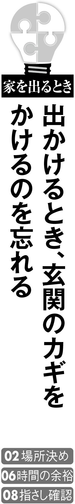
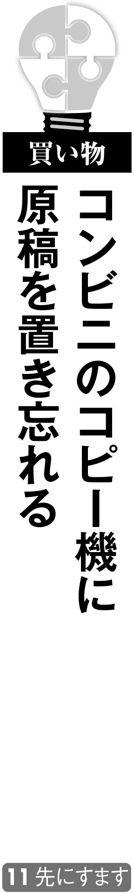
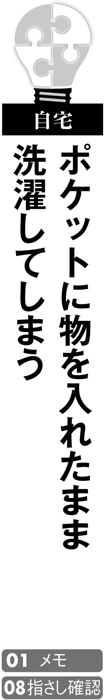
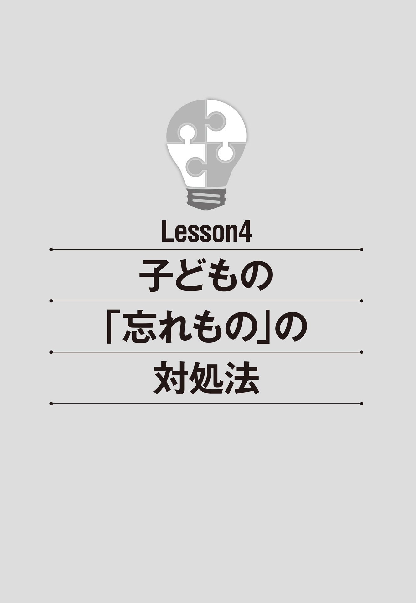
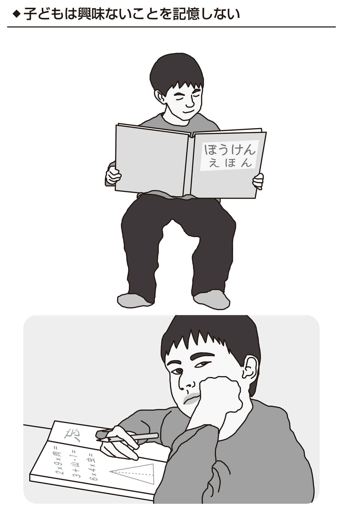

| ＮＨＫ出版 なるほど！の本 あなたの その「忘れもの」 コレで防げます | |
| 芳賀 繁 | |
| ＮＨＫ出版 (2017) | |
あなたもよくする典型的な「忘れもの」は、減らせます！
ここで紹介する５つの典型的な忘れものには、効果テキメンの防止策があります。
携帯電話やさいふなど絶対使うものを、かばんに入れ忘れた......
家を出る前に、かばんのなかに入ってないといけないものを確認するための呪文、「けさきめて 」を唱えよう！
▼「けさきめて」っていったいなんだ？ ...そんなあなたは［ こちら へ！］
通勤中の電車やバスに、愛用していた傘を置き忘れた......
傘は肌身離さず持ち歩こう！ 体に接触させておけば忘れづらい！ さらに、もっと効果のある解決法も！
▼もっと効果のある解決法を知りたい？ ...そんなあなたは［ こちら へ！］
「あとで電話します」と伝えたのに、雑務に追われて忘れた......
先方はイライラしながら電話を待っているかも!? 「あとで」が１時間以内なら、キッチンタイマーを使おう！
▼「あとで」が１時間以上先になるかも ...そんなあなたは［ こちら へ！］
メールで、肝心の添付ファイルを付け忘れて仕事が遅れた......
「添付ファイルがありませんよ」との返信に冷や汗が......。本文を作成する前にファイル添付しておこう！
▼気をつけても、添付忘れが直らない ...そんなあなたは［ こちら へ！］
子どもが、毎日のように学校に必要な物を持って行き忘れる......
曜日や行事によって違う、学校へ持って行く物。持ち物リストを掲示して、確認するクセをつけさせよう！
▼それでも子どもの忘れものが減らない ...そんなあなたは［ こちら へ！］
はじめに
「忘れもの」名人の心理学者が、具体的な対策方法を教えます
この本を手に取ったあなた。もし、いま、書店で立ち読みしている最中だったら、カバンや傘を手に持っていませんか？ 「ちょっとのあいだ」と思ってその辺に置いていると、きっと忘れて帰ることになりますよ。だって、この本を手に取ったってことは、忘れものが多くて困っているからでしょう？ 早くレジに持って行き、あとは家でゆっくり読みましょう。
本書では「忘れもの」を心理学の立場から解説し、効果的な忘れもの防止策を提案しています。
大丈夫、あなたにもできます。なぜなら、忘れもの名人だった私自身が実行しているものばかりですから。じつは私、なにを隠そう相変わらず忘れものが多いのですが、もしこれらの対策をしなかったら、いまの10 倍くらい忘れものをしてしまうのではないかと思います。
まずＬｅｓｓｏｎ１では、忘れものと記憶の関係を解説します。なぜなら「忘れもの」は「記憶の失敗」だからです。記憶の研究は、認知心理学という心理学の一分野で研究されてきました。そのなかから忘れものを理解するうえで役立ちそうな知見を、できるだけやさしく解説します。もし「読むのが面倒くさい」「理屈っぽくて難しい」と思ったら、読み飛ばしてＬｅｓｓｏｎ２に行ってもらってかまいません。あとでヒマができたら読み直してください。
Ｌｅｓｓｏｎ２では、まずはじめに「忘れものを防ぐ12 の法則」を示します。さらに、生活の様々なシチュエーションのなかで起こしがちな忘れものの原因と背景、そして解決策を提案します。続くＬｅｓｓｏｎ３では、忘れ「もの」ではなく、忘れ「ごと」について考えます。「パスワードを忘れた」「顔はよく知っているのに名前が思い出せない」「地図はあるのに、お店にたどり着けない」というような問題を解決しましょう。最後のＬｅｓｓｏｎ４は、子どもの忘れものについての章です。親御さん、とくに男の子の保護者の方、子どもの忘れものが多くて悩んでいませんか？ 子どもが忘れものをする要因を解説し、「忘れんぼう」の子どもにどう接したらよいか考えましょう。
あまり杓子定規に、「忘れものは絶対ダメ」「忘れものをする人はだらしない」などと考える必要はありません。忘れっぽいのも愛嬌です。「アチャー、またやっちまった」と痛い思いをするのも人生のスパイスです。他人に迷惑がかかるような失敗だけはなんとかして予防したい、そのために少しは努力しようと考えているあなたは、その努力のヒントを本書から得られるでしょう。
「次は気を付ける」「もっと注意する」といった精神論ではダメです。「忘れっぽい性格だし」とあきらめてなにもしないのはもっとダメです。ここで示した解決策はどれも具体的なものです。あなたの忘れもの、忘れごとに対してすぐに実行しましょう。きっとよい効果が得られると思います。
立教大学現代心理学部教授 芳賀 繁
あなたの その「忘れもの」 コレで防げます
Contents
〈はじめに 〉「忘れもの」名人の心理学者が、具体的な対策方法を教えます
● 「失敗」には、ボケ型とドジ型の２種類がある
● スリップ、ラプス、ミステイク、失敗の３つのパターン
● 人間のあらゆる行動と判断は、「記憶」が支えている
● 「記憶」するには、心のエネルギー、つまり「注意」が必要になる
● ひと口に「記憶」といっても、いろいろな種類のものがある
● 「忘れもの」を防ぐ12 の法則
● 「家を出るとき」 毎日必要なものをカバンに入れ忘れる
● 「家を出るとき」 仕事で使う重要な書類を自宅に置き忘れる
● 「家を出るとき」 出張に必要な物を家に忘れる
● 「家を出るとき」 出かけるとき、玄関のカギをかけるのを忘れる
● 「家を出るとき」 エアコンなどのスイッチを切り忘れる
● 「家を出るとき」 朝、出かける前のしたくや身だしなみの確認を忘れる
● 「通勤時や移動時」 電車やバスのなかに傘を忘れる
● 「通勤時や移動時」 外出先や列車のなかなどにスマホや携帯電話を忘れる
● 「通勤時や移動時」 列車のなかの網棚に荷物を忘れる
● 「モバイルツール」 前の日に充電をし忘れて電池残量がない
● 「オフィス」 「あとで電話します」と伝えたのに忘れてしまう
● 「オフィス」 用意した資料のページに抜けがある
● 「オフィス」 資料や書類をどこに置いたかわからなくなる
● 「オフィス」 仕事のアポイントを忘れる
● 「オフィス」 送信メールに添付ファイルを付け忘れる
● 「外出先」 ホテルにスマホや携帯電話の充電器を忘れる
● 「外出先」 飲食店に大事な物を忘れる
● 「外出先」 さいふにお金を補充することを忘れる
● 「外出先」 大きなカバンの、どこになにが入っているかを忘れる
● 「外出先」 手袋などの小物を落としたまま気付かない
● 「外出先」 脱いだ服やコートを置き忘れる
● 「買い物」 おつりをもらったのに商品を取り忘れる
● 「買い物」 スーパーで買った商品を置き忘れる
● 「買い物」 カートに自分の荷物を引っかけ、そのままカートを返して忘れる
● 「買い物」 レジで支払ったかどうかを忘れたり勘違いしたりする
● 「買い物」 コンビニのコピー機に原稿を置き忘れる
● 「買い物」 通信販売で買った商品の支払いを忘れる
● 「自動車」 ヘッドライトやハザードランプを消し忘れる
● 「料理」 ガスコンロの火を消し忘れる
● 「料理」 調理の際、電化製品のスイッチのＯＮ／ＯＦＦを忘れる
● 「自宅」 いつも飲んでいる薬を飲み忘れる
初デートでは遅刻しないのに、しばらくすると遅刻してしまう理由とは!?
● 「自宅」 ポケットに物を入れたまま洗濯してしまう
● 「自宅」 家に帰った直後、内側からカギをかけ忘れる
● 「自宅」 物をしまった場所を忘れる
● 「自宅」 家電の操作方法を忘れてしまう
● 「自宅」 いろいろなリモコンが見つからない
● 「自宅」 なにかをしに部屋に入ったのに、なにをしにきたのかを忘れる
● 「就寝時」 部屋の電気を消し忘れる
● 「就寝時」 目覚まし時計のアラーム設定を忘れる
● 覚えやすく、安全なパスワードを作ろう
● その人が誰か、なんという名前だったかを忘れない方法がある
● 子どもの「忘れもの」の特徴は興味と重要度が関係している
● 忘れないためには、「書くこと」がなによりも有効な手段
● 忘れものの多い子どもに対処する親の３つの心構え
● 「外出時」 外出時に必要な物を持って行き忘れる
● 「通学」 教科書など、学校に必要な物を持って行き忘れる
● 「通学」 学校に特別に持って行く必要のある物を持って行き忘れる
● 「通学」 登下校時に、持ち物を忘れてしまう
〈おわりに 〉〝ハガにゃん〟最大の「忘れもの」も、本書を読んでいれば防げた、かも!?
企画・編集 造事務所
取材・執筆 奈落一騎、山口幸恵
イラスト 多屋光孫
カバー・扉・オリジナルブックデザイン yockdesign（井上祥邦）
「失敗」には、ボケ型とドジ型の２種類がある
ついやってしまうミスのなかでも、「忘れもの」は典型的な失敗でしょう。では「忘れもの」はどんな人がやりがちなのでしょうか？
●ボケは記憶の問題、ドジは注意力の問題
失敗を繰り返すと、人から「ボケてるなぁ」と叱られたり、「ドジね」と笑われたりします。自分でも、そう思うことでしょう。ですが、ボケとドジは厳密に言えば違うものです。
「ボケ」というのは記憶力に原因があるミスを指すことが多く、ドジというのは注意力に原因があるミスを指すことが多いのです。別の言い方をすれば、ボケは「しなければいけないことをやり忘れるミス」、ドジは「やってはいけないことをやってしまうミス」です。
「忘れもの」が多い人というのは、前者のボケ型になります。人間のミスをボケ型とドジ型にわけたのは、マンチェスター大学の心理学部教授だったジェームズ・リーズン博士です。
ボケ型のミスの具体例を、いくつか挙げてみましょう。「電気のスイッチを切り忘れる」、「あとで電話しようと思っていたのに忘れてしまった」、「待ち合わせをすっぽかした」、「自分がいまなにをやりかけていたのか忘れた」。これらの失敗の大半は、記憶に原因があります。
もちろん、誰だってこのような失敗をすることはあります。人よりこの手のミスが少し多い程度ならば「ぼんやりした人」ということになりますし、極端に多ければ、大ボケタイプとなるでしょう。
でも、大ボケタイプだからといって、そんなに心配することはありません。大ボケタイプの人は世の中にたくさんいますし、そういう人も普通に仕事をしたり、生活をしています。
本書のＬｅｓｓｏｎ２以降で具体的に紹介しますが、ボケ型のミスを減らす方法としては、こまめにメモを取る、チェックリストを見ながら作業を進める、思い出す手がかりとなるシグナルをセットするなどの対策がいくつもあるのです。
ちなみに、ドジ型のミスの具体例としては、「つまずいて、転びそうになった」、「コップをひっくり返した」、「電車に飛び乗ったが、行き先違いだった」などがあります。この手のミスが人よりやや多ければ「あわてんぼう」と言われるでしょうし、極端に多ければ「大ドジ」タイプです。このようなドジ型のミスに対しても、手を出す前に一呼吸置く、指さし確認をしてから操作するなど、対策はいくつもあります。
ところで、世の中にはボケ型とドジ型の両方のミスが多いという人もいます。そんな「大ボケ・大ドジ」タイプの人は、ミスの連発で苦労することも多いかもしれませんが、それぞれに対策はありますし、少なくとも人から愛されるタイプと言えるでしょう。
人間のするミスには、記憶が原因のボケ型のミスと、注意が原因のドジ型のミスがあります。「忘れもの」はボケ型です。
スリップ、ラプス、ミステイク、失敗の３つのパターン
ひと口に失敗と言っても、その中身は様々です。自分にはどのようなタイプの失敗が多いかを知ることで、より確実にミスを減らすことができます。
●計画段階の失敗か、実行段階の失敗か
人間のしてしまう失敗には、ボケ型、ドジ型以外にも、様々なわけ方があります。先に紹介した心理学者のリーズン博士は、失敗の種類を、スリップ（動作のミス）、ラプス（記憶のミス）、ミステイク（間違い）の３つにも分類しています。
スリップとは、計画自体は正しかったが実行の段階で失敗してしまったもの のことです。ラプスは、実行の途中で計画を忘れてしまうこと。ミステイクは、正しく実行できたが、そもそもの計画自体が間違っていたもの のことです。
たとえば、会社に大事な書類を持って行かなければならないとします。しっかりカバンに書類を入れたのに、それとは違うカバンを持って家を出てしまうのがスリップです。書類をカバンに入れようとしたときに電話がかかってきてしまい、そのまま入れ忘れてしまうのがラプス。そして、書類をカバンに入れ、ちゃんと会社に持って行ったものの、じつはその書類が必要なものではなかったというのがミステイクです。このことからわかるように、「忘れもの」はたいていの場合、ラプスに分類されます。
この３種類の失敗は、原因と対策がそれぞれ違います。スリップは、おもに注意が散漫なことから起こる失敗です。家を出る前に、もう一度カバンを開け、書類が入っているか指さし確認をすることなどで防げます。ラプスは記憶が原因で起こる失敗です。防ぐためには、スマホ（携帯電話）や玄関に、「書類を持って行くこと」などとメモをしたり紙を貼ったりしておくのがよいでしょう。
意外と防ぐのが難しいのが、計画自体が間違っていたことで起こるミステイクです。ミステイクは、経験がなさ過ぎることからも、あり過ぎることからも起こります。
経験のない新入社員は、どんな書類が必要かよくわかっていないので失敗してしまいます。いっぽうベテラン社員は、それまでの経験から「この書類で大丈夫だろう」と高をくくってしまうので失敗してしまうのです。これを防ぐためには、新入社員には正しい情報や知識を教育すること、ベテラン社員には過去の経験に固執せず、つねに柔軟な思考ができるよう訓練する必要がありますが、即効性のある解決策はありません。
結果としては同じ「失敗」でも、その背後には様々な原因があり、それに応じた解決策を選ばなければ何度も似たような失敗を繰り返してしまいます。自分がどのタイプの失敗が多いのか、一度、見直してみてはいかがでしょうか。
スリップとラプスは実行段階での失敗。実行は正しくできたが、計画自体が間違っていたミステイク。「忘れもの」はラプスです。
人間のあらゆる行動と判断は、「記憶」が支えている
知り合いに会って挨拶する、服を買いに行って自分に合ったサイズの一着を選ぶ。そんな簡単なことも、すべて「記憶」の助けを借りることで、はじめて達成できます。
●「記憶」がなければ、なにもできない
「忘れもの」は、記憶に問題があるときに生じやすいということは、ここまで見てきたことからもわかると思います（本書のここまでの内容、ちゃんと「記憶」できていますか!? ）。じつは、「忘れもの」だけではなく、人間のあらゆる判断や行動を支えているのが「記憶」なのです。
人間は外部からの音や光といった情報を耳や目で受け取り、それを認知し、やるべきことを判断して、行動に移します。認知とは、受け取った情報がなにかを理解することです。記憶は、この認知に深くかかわっています。
たとえば、向こうから誰かがやってきて、田中さんだとわかったので挨拶する。当然ですが、田中さんと会ったことがなかったり、会ったことを忘れていたら、つまり、あなたのなかに田中さんの記憶がなければ、相手を田中さんだと認知することはできません。そして、田中さんのことを認知できなければ、挨拶すべきか、それとも警戒して避けるべきかという判断や行動もできないのです。このように、人間の認知・判断・行動はすべて、記憶によって支えられています。
記憶と認知・判断・行動の関係は、「田中さん→知っている→挨拶する」といったような単純なものだけではありません。たとえば、アルファベットの「Ｌ」という文字。これは、視覚情報としては縦棒と横棒の組み合わせにすぎません。
この２本の棒の組み合わせを見たとき、自分のなかのアルファベットの記憶と照らし合わせることで、はじめて「Ｌ」という文字だと認識できます。アルファベットを知らなければ、Ｌと認知することはできないのです。
さらに、そのとき自分がいる場所が洋服店で、服にＬというシールが貼ってあった場合、Ｌはラージサイズを意味すること、自分にはＬサイズがちょうどいいことなどを思い出すので、その服を手に取って試着するという行動に移るのです。もし、万が一、洋服店ではなくファストフード店での記憶を引き出してしまい、「ドリンクはＭサイズが自分にはちょうどいい」などという記憶と照らし合わせてしまうと、Ｌサイズの服を棚に戻しＭサイズのキツキツの服を試着するかもしれません。
このことからもわかるように、人間は外部からの情報を、つねに、そのとき、その状況に一番適した記憶と照らし合わせることで、正しい行動をしているのです。 もちろん、たいていの場合、この複雑な作業は無意識に行われています。しかし、なにかの拍子に誤った記憶と照らし合わせてしまったり、記憶そのものを失ってしまったりすると、失敗が起こってしまいます。
「記憶」がなかったら、人間はなにも判断できませんし、行動することもできません。「記憶」は、それほど大事なものなのです。
「記憶」するには、心のエネルギー、つまり「注意」が必要になる
テレビを観ながら妻（夫）の話を頭に入れるのが難しいように、なにかを「記憶」しておくためには、そのことに「注意」を向ける必要があります。
●人間が一度に「注意」を向けられる対象は一定
「忘れもの」というのは記憶に問題が生じることで起きるボケ型の失敗で、注意が散漫なために起こるドジ型の失敗とは違うものです。ですが、記憶と注意は深い関係にあります。
注意するというのは、言い換えれば、意識を集中するということです。意識を集中していなければ何かを記憶しておくこともできませんし、正しい記憶を引き出すことも難しくなります。 ほかのことに気を取られている状態では、なにかを覚えたり、思い出したりするのは極めて困難なのです。たとえば、本を読みながら人の話を覚えておくことはなかなかできませんし、明日の会議のことばかり考えていると、うっかり結婚記念日のことを忘れてしまったりします。
注意は、スポットライトにもたとえられます。スポットライトの焦点を絞って、小さな所に光を集中させれば、光が当たっている対象はくっきりと浮かび上がり、印象に残ります。しかし、そうやって焦点を絞れば絞るほど光が当たらない範囲も広がり、見えない物も増えてしまいます。反対に、全体に光を当てようとすれば、すべてがぼんやりとしてしまい、どれも印象に残りません。
スポットライトの光量が一定であるように、人間の持っている注意の全体量も一定ですので、その場の状況に応じて正しい対象に注意を向けていないと、失敗が起こります。心理学では、人間が認識や判断、記憶などのために頭を働かせることを「内的プロセス」と言い、「内的プロセス」に使われる「注意」のことを「情報処理資源（注意リソース）」と言います。
「情報処理資源」は、心のエネルギーのようなものです。ガソリンがなくなると車が走らなくなるように、心のエネルギーが足りなくなると、認識や判断、記憶もうまくできなくなってしまいます。
そして、急勾配の坂道を登るときガソリンを大量に消費するように、難しいことをしようとすればするほど心のエネルギーも大量に必要になってきます。 先にも説明したように、注意リソースは無限にあるわけではなく、その量は一定です。ですから、難しいことをするときは、そのことに意識を集中させなければならないのです。
もちろん、人間は慣れによって、以前は難しく感じたことも次第に簡単になり、それに伴って心のエネルギーもあまり使わずに済むようになります。免許を取りたての人は運転だけで精いっぱいですが、ベテラン・ドライバーなら運転しながら同乗者と会話を楽しむこともできるでしょう。それでも注意の全体量が増えるわけではありませんから、スマホをいじりながら運転するなどといった、難しい作業を同時にしようとすると、ベテランでも事故を起こしてしまうのです。
記憶したり思い出すには、心のエネルギーである「注意」が必要です。注意の量は一定なので、難しいことをするときは集中が重要です。
ひと口に「記憶」といっても、いろいろな種類のものがある
あらゆる認識、判断にかかわっている「記憶」。その「記憶」には、「条件反射」、「熟練技能」、「認知的技能」、「エピソード記憶」、「意味記憶」の５つがあります。
●いわゆる記憶とは「エピソード記憶」と「意味記憶」
人間の行動の多くに「記憶」はかかわっています。ただし、ひと口に「記憶」といっても、じつは様々な種類があります。大きくわければ、「条件反射」、「熟練技能」、「認知的技能」、「エピソード記憶」、「意味記憶」の５つです。
「条件反射」というのは、梅干しを見るとツバが出るといった種類のものです。過去に梅干しを食べたことがあって、酸っぱかったという記憶があるためツバが出てきます。「熟練技能」というのは、熟練の職人が定規も使わずに正確な直線を引けるといったものです。それまで数えきれないほど直線を引いていた記憶があるからこそ、このようなことができます。「認知的技能」というのは、数式の計算など、一定のルールに基づいて一連の手続きを実行することです。
もっとも、この３つの「記憶」は、いわゆる「体が覚えている」といったタイプの記憶ですので、あまり「記憶」とは意識されません。私たちが普通「記憶」と呼んでいるのは残りの２つ、「エピソード記憶」と「意味記憶」です。
「エピソード記憶」とは、自分が体験した思い出のことです。子どものころに親に叱られたことや初デートのことから、朝食になにを食べたかまで、すべてこれに当たります。「エピソード記憶」は、自分にとってインパクトが強かったことほど強烈に記憶に残ります。そのため、同じ体験を共有していても、まったく違う記憶として残っていることもよくあります。
たとえば、初デートの思い出で、自分は雨が降ったことをよく覚えているのに、相手はそのことをまったく覚えていない。いっぽう、相手は食事したレストランのことをよく覚えているのに、自分はまったく覚えておらず、話が食い違うといった経験をしたことのある人も多いでしょう。
最後の「意味記憶」というのは、様々な情報の記憶のことです。これはさらに、「感覚記憶」、「短期記憶」、「長期記憶」の３つにわけられます。
「感覚記憶」は、光や音といった外部からの情報を受け取ったとき、その情報がなにを意味しているかを判断するまでの10 分の１秒以下のあいだ記憶しているものです。「短期記憶」は、はじめて見た電話番号をかけるまで頭に留めておくといった一時的な記憶のことです。これに対して、「長期記憶」とは恋人や自宅の電話番号のように、知識として頭のなかにしまい込まれている記憶です。はじめての電話番号も何度もかけていれば覚えてしまうように、「短期記憶」も触れる機会が多ければ、次第に「長期記憶」となっていきます。
５種類の記憶はそれぞれ役割が違います。これらを使いこなすことで、人間は様々な認識・判断・行動をすることができるのです。
昔の心理学では、「感覚記憶→短期記憶→長期記憶」という順番で、外から入ってきた情報が次第に記憶に定着していくと考えられていました。たとえば、引っ越したばかりの人は、しばらくは自分の住所を手帳を見ながら書類に書いているでしょう。しかし、次第に住所を覚えてなにも見ずに記入することができるようになります。このとき、住所の記憶が短期記憶から長期記憶に移行したというわけです。
しかし、その後、短期記憶というのはたんに一時的な情報の置き場所ではないことがわかってきました。
感覚記憶からやってくる新しい情報（食材）と、長期記憶やエピソード記憶から取り出した知識や経験（食材）を混ぜ合わせて調理し（調理には熟練技能や認知的技能も必要です）、それに基づいて判断したり、行動したり、できあがった新しい認識（料理）を長期記憶（冷蔵庫）に保管する手続きをする、そんな台所のようなところなのです。
この調理に必要な熱が、こちら で説明した心のエネルギー「注意」です。そんな働きをする記憶の場所を、「ワーキング・メモリ（作動記憶）」と呼ぶことになりました。
たとえば、知り合いの田中さんに久しぶりに会ったとき、目から入ってくる顔のイメージと、長期記憶にある知り合いの顔のイメージを付き合わせて、「田中さん」だと認識します。以前より白髪が増えたり、太ったりしていた場合は、新しいイメージで長期記憶を上書きします。
同時に、田中さんの勤め先や肩書きを長期記憶から、また前回会ったときの出来事をエピソード記憶から思い出せれば、そつなく会話を進めることができます。
反対に、目の前にいる人の顔や声から田中さんだと認識できなかったり、肩書きを思い出せなかったり、別の人とのエピソードと混同したら、会話はとんちんかんなものになり、相手から「なんだこいつは」と信用を失いかねません。
このように、ワーキング・メモリの働きはとても大事なものなのです。
記憶が消えてしまう「忘却」にも、いろいろな種類のものがある
人間は覚えたことを、どんどん忘れていってしまいます。不便なようですが、「忘れる」ということにも大切な効能があります。なぜ、人は忘れてしまうのでしょう？
●「長期記憶」は忘却されることがない
せっかくいろいろなことを記憶しても、人間は次々と忘れていってしまうものです。そして、記憶が忘却されてしまうことで、様々な失敗が起こります。「忘れもの」もそのひとつです。
一度覚えたことを絶対に忘れなくなれば便利なようですが、そうとも言いきれません。人間の記憶の容量には限りがありますから、覚えたことをまったく忘れなかったら、新しい記憶が入る余地がなくなってしまうでしょう。また、もしすべてのことを覚えていたら、必要な記憶を取り出すのも難しくなってしまいます。
10 個しか引き出しがないタンスなら、どこになにをしまったかすぐに思い出せますが、１０００個も引き出しがあったらわけがわからなくなってしまいます。そういう意味でも、忘却は人間にとって必要な機能なのです。
「短期記憶」と「長期記憶」では、忘却のされ方に違いがあります。「短期記憶」は一度忘れてしまうと、完全に情報が消去されてしまいます。 一回しかかけない電話番号は、電話をかけるまでは覚えていられても、用事が済めば、たいてい二度と思い出せません。
いっぽう、「長期記憶」は一度覚えてしまえば、二度と忘れることはありません。 時間が経つと記憶が薄れ、思い出すのが困難になることはありますが、答えを教えてもらえれば「ああ、そうだった」と思い出せます。たとえば、どこかで会った人だが名前を思い出せないといったとき、その人の名前がちゃんと「長期記憶」になっていれば、「田中さんだよ」と言われた瞬間に思い出せるものです。あるいは、ヒントだけでも思い出すこともあります。昔の自宅の電話番号がすぐに思い出せなくても、最初の４ケタを見れば、続きの数字がスラスラと出てきたりします。
「短期記憶」というのは、パソコンで文章を書いていて保存していない状態。「長期記憶」は文章を書き終えたあとハードディスクやＵＳＢメモリに保存した状態とも言えます。パソコンで文章を書いている最中、その文章は画面に表示され続けますが、ちゃんと保存せずにワープロソフトを閉じたり、パソコンの電源を落とした途端、すべて消えてしまいます。ですが、ハードディスクやＵＳＢメモリに保存しておけば、いつでも取り出せるというのと同じことです。
ところで、年を取ると記憶力が悪くなるとよく言いますが、その主な理由は、年を取ると「短期記憶」から「長期記憶」へ情報が移りにくくなるからです。 そのため、新しいことがなかなか覚えられなくなるのです。
忘却によって様々な失敗が起こりますが、記憶するために忘却は必要な機能です。

未来の予定の記憶である「展望的記憶」はちょっとクセもの
あとでやろうと思っていたのに忘れてしまった。──そんな経験のある人は多いでしょう。少し先に実行する計画は、かなり意識的に対策を取っておかないと失敗しがちです。
●「思い出す」ことを思い出す難しさ
思い出すのが一番難しいのが、未来の予定の記憶です。「２時間後に電話をかけなければいけない」とか、「来月、奥さんの誕生日だからプレゼントを買っておかないといけない」といったことを覚えておく記憶のことです。心理学では、このような記憶のことを「展望的記憶」と言います。
「未来の予定」を思い出すのが難しいのは、計画してから実行までに一定の期間があるためです。たいていの場合、実行までのあいだは、そのことを忘れています。「２時間後に電話をかけなければいけない」からといって、それまでのあいだ、ずっと電話をかけることを考えている人はあまりいないでしょう。そして、その時間の直前になったときに、自発的に「電話をかける」ということを思い出さなければならないのです。改めて考えれば、これがいかに難しいことかわかるはずです。
試験のように「思い出しなさい」とは書いていないので、「展望的記憶」は、まず「思い出す」ことを思い出さなければなりません。 このように非常にハードルが高いため、「展望的記憶」に関する失敗はよく起こります。「展望的記憶」を思い出せなかったためにしてしまう「忘れもの」も多いことでしょう。
秘書のような存在がいて、「そろそろ電話をかけたほうがいいですよ」とか、「奥様の誕生日が近いですが、プレゼントはもう用意されましたか」と言ってくれればよいのですが、そんな贅 沢 な立場の人はそうそういません。ならば、「展望的記憶」の失敗を防ぐためには、自分で秘書の代わりになるものを用意する必要があります。
たとえば、目につきやすいところに「○時に電話」などのメモを貼っておく。あるいは、少し先の予定なら、毎日見る手帳に書いておく。最近は、スケジュール管理のアプリなども充実しており、事前に予定を入力しておけば、ちょうどいいタイミングにアラームなどで知らせてくれるものもあります。これらを駆使すれば、「展望的記憶」の失敗をかなり減らすことができるでしょう。
また、すぐにできることは、とっととやってしまうというのも、「展望的記憶」の失敗を防ぐ秘 訣 です。「２時間後に電話」という約束をしているのに、いますぐ電話をかけるわけにはいきませんが、「来月の奥さんの誕生日プレゼント」なら、思い立ったその日のうちに買ってしまうのが一番安全でしょう。とくに、はっきりした日時の縛りがなく、「あとで」とか「そのうち」といった曖 昧 な予定ほど、忘れやすいものです。そういうことほど、早め早めに実行に移すことが、結果的に失敗を防いでくれます。
思い出すのが難しい、未来の予定に関する記憶。メモを貼ったり、やれることは早めにやるなど対策を取る必要があります。
どこかで嗅いだことのある懐かしい香り。「ああこれは、昔の恋人がつけていた香水の香りだ」、そう感じた瞬間、恋人と過ごした日々が鮮明に思い出されるといった経験をしたことのある人も多いでしょう。
あるいは、数十年ぶりにぬいぐるみを触ってみたら、その手触りで子ども時代のことを思い出した。久しぶりにインスタントラーメンを食べてみたら、貧しかった若いころのことを思い出した。そんな体験をしたことのある人もいるでしょう。
嗅覚や味覚、触覚といった感覚の記憶には、それにまつわる記憶を引き出す効果があるのです。同時に、そういった嗅覚や味覚、触覚といった強い刺激には、関連する情報を強く記憶に残す効果もあります。
このような効果のことを、「プルースト効果」と言います。プルーストとは、フランスの作家、マルセル・プルーストのことです。彼が書いた小説『失われた時を求めて』の主人公は、紅茶にひたしたマドレーヌの匂いを嗅いだことがきっかけとなり、幼少時を思い出します。そこから名づけられました。
「プルースト効果」を利用すれば、自分を印象づけることに役立つかもしれません。たとえば、他人に自分のことを思い出してもらいやすくするために、いつも同じ香水を使う、といった作戦が考えられます。
絶対の成果は約束できませんが、気休め程度にでも試してみる価値はあるでしょう。
「忘れもの」を防ぐ12 の法則
忘れものをしてしまうメカニズムを理解したら、次に忘れものを予防する対策を身につけよう。まずはこの12 の法則をチェック！
01 メモやチェックリストを作っておく
出張に必要な物を家に忘れる［ こちら ］
02 置く場所や入れる場所をちゃんと決めておく
外出先や列車のなかなどにスマホや携帯電話を忘れる［ こちら ］
03 いっしょに使うものはひとまとまりに置く
列車のなかの網棚に荷物を忘れる［ こちら ］
04 家でもオフィスでも整理整頓を心がける
資料や書類をどこに置いたかわからなくなる［ こちら ］
05 「あとでやろう」ではなく、すぐやる
さいふにお金を補充することを忘れる［ こちら ］
06 つねに時間の余裕を作って行動する
朝、出かける前のしたくや身だしなみの確認を忘れる［ こちら ］
07 よくある行動は動作の順番を決めておく
送信メールに添付ファイルを付け忘れる［ こちら ］
08 「動作＋発声」の指さし確認を心がける
出かけるとき、玄関のカギをかけるのを忘れる［ こちら ］
09 自分だけでなく他人を利用する
用意した資料のページに抜けがある［ こちら ］
10 自分だけでなく便利な機器の力に頼る
調理の際、電化製品のスイッチのＯＮ／ＯＦＦを忘れる［ こちら ］
11 作業全体が完了する前にすませておく
コンビニのコピー機に原稿を置き忘れる［ こちら ］
12 とにかく記録をとり「外部記憶」化する
「あとで電話します」と伝えたのに忘れてしまう［ こちら ］
次ページ以降、Ｌｅｓｓｏｎ２の各項目で、とくに有効と考えられる法則を、それぞれタイトルの下に表示しましたので、参考にしてください。
大事な取引先との初顔合わせ。名刺を用意しようとカバンのなかを見たら、名刺入れがない！ 通勤電車のなかでスケジュール確認のため、手帳を出そうとしたら、カバンのどこにもない......。
いつも入っているはずの物が、カバンのなかに見つからないと焦ります。すぐに買える物ならいいですが、そうでない場合、その日の仕事に大きな支障が出ることも。
ビジネス・シーンだけでなく、入れておいたはずの花粉症の薬がないとか、化粧道具がないということもあるでしょう。それだけで１日中、気分が落ち着かないものです。
カバンに物を入れ忘れる原因は、朝家を出る前にバタバタしていて、確認しなかったというのがほとんどでしょう。いつも入っている物なので、「大丈夫だろう」と確認しない面もあります。
また前日にカバンから出して使用し、戻し忘れたということもあるでしょう。大きな荷物があったので、いつもと違うカバンにしたときなども、忘れがちです。
カバンへの入れ忘れを防止するのに一番いいのは、当たり前の話ですが、出かける前に確認するということです。その確認作業を習慣づけるために、出かける前に確認の呪文を唱えてください。
たとえば、携帯（スマホ）、さいふ、キー（カギ）、メガネ、手帳が、毎日カバンに入っていないとまずいなら、それらの頭文字をとって、「けさきめて（今朝決めて）」と、毎朝出がけに唱えてみてください。
このとき大事なのは、声に出して言うことです。また、ごろ合わせはイメージしやすいものにしましょう。
ちなみに、この場合の物の個数は６個が限界。７個以上になる場合は、別にチェックリストを用意したほうが安心です。
今日は自社の経営状況改善の施策を示す、大事なプレゼンテーションの日。意気揚々と会議室にのり込んだそのとき、もっとも重要な「資料」を自宅に置き忘れたと気付いたら、頭のなかが真っ白になってしまうでしょう。
人はあまりにも大きな緊張やプレッシャーに襲われると、無意識にそれをはねのけようとする性質を持っています。
たとえば先ほどの場合だと、いつも以上に身だしなみを整えたい、滑舌よくスムーズに話したい、少しユーモアも入れて笑いを取ろうかなど、プレゼンそのものの内容にはさほど重要ではないことを、つい考えがちです。
また、絶対に遅刻をしてはならないと思うあまり、早く家を出ることで頭がいっぱいになり、肝心なことが思考から抜け落ちてしまうのです。
けれども、緊張やプレッシャーに襲われたのも、肝心なことを忘れたのも自分ですから、そうならないように未然に防ぐのも自分です。
玄関先で最終チェックとして、頭のなかで自分がプレゼンしている様子をイメージします。
脳内でイメージしてみるのは緊張やプレッシャーから焦っている自分を、客観視するためです。そうすることで、たとえばプレゼンなら、話す段取りを頭のなかでつけることができ、なおかつ記憶にも残ります。
さらに、ひと呼吸おくことで気持ちが落ち着いたり、持っていく物を思い出しやすくなったりするのです。
日常、非日常にかかわらず、毎朝玄関先で立ち止まりひと呼吸おいて、その日の重要事項に関してイメージしたり、考えるという習慣をつけることをお勧めします。そのためにも、時間に余裕をもって行動しましょう。
「毎日必要なものをカバンに入れ忘れる 」で紹介した「けさきめて」のように、毎日必ず使うスマホ、さいふ、カギ、メガネ、手帳などは、持って出ることを忘れると、その日１日が不便になり不都合が増えます。
とくにスマホや手帳がないと、仕事が滞ってしまう可能性もありますね。ただ、その１日さえ乗り切ってしまえば、リセットは可能です。
ところが、宿泊を伴う出張時に必要な物を忘れると、非常にやっかいです。たとえば、プレゼンを要する会議があって地方に出かけたのに、プレゼンに必要な資料を忘れてしまったら、目も当てられません。
また、洗面道具を忘れた場合、近くのコンビニなどで簡単に入手できればいいのですが、海外出張など、訪問する地域によっては滞在中ずっと不便な状況が続くおそれもあります。
起床時間、利用する列車、ふだんは利用しない空港での手続き、宿泊のための荷物など、出張は、いつもの通勤とは異なります。特別に持って行く物も多く、忘れる可能性も増すのです。
特別な物を忘れて仕事に支障が出たり、関係者に迷惑をかけたりしないようにするために、チェックリストを作ります。追加したいときは、付 箋 やメモなどに手書きしましょう。
たとえば、国内出張用と海外出張用とで別々のチェックリストを作り、ふだんは透明のファイルに入れて、「出張（国内用）リスト」「出張（海外用）リスト」と見出しが見えるように机の前に立てておきます。
そして出張前日には、それらのチェックリストを見て必要な持ち物をカバンに入れます。充電中のスマホや携帯電話など、当日にならないと入れられないものは、チェックリストに丸をつけるか、付箋に「スマホ」などと書き、目につく所やスーツケースなどに貼りましょう。

家を出て、電車に乗ってから急に「あれ？ 玄関のカギをかけたかな？ もしかしたらかけ忘れたかもしれない」と思って不安になった経験は、誰しもあるでしょう。
引き返して確認する時間があればいいのですが、そうもいかないときはなおさら不安が大きくなります。
カギをかけるという行為は、ひとりで出かけるときより、家族のだれかとふたり以上で出かけるときのほうが、忘れる可能性が高くなるかもしれません。同行者がいると、たとえばおしゃべりに夢中になったりして、戸締まりに注意がいかなくなったりするのです。
またひとりの場合でも、急いでいたり、あれこれ考え事をしながら家を出るときは要注意。カギをかけることが毎日の習慣になっていると、特別意識をしなくても勝手にその動作ができてしまったり、脳がカギをかけるという記憶を残さなくなります。だからこそ、意識してカギをかけるようにしましょう。
「出かけるときは必ず施錠」、これが完全に習慣化できればいいのですが、それでも不安なときは、やはり確認が重要です。
指さし確認や声に出しての確認、さらにカギをかけたあとにドアノブを回したりレバーを上下させる など、しっかりカギがかかっていることが確認できれば安心です。
また、カギをかけ忘れる原因を取り除くことも重要です。玄関では電話などほかのことをしない、時間に余裕を持って出かける、カギをかけることだけに意識を向ける、など注意リソース の問題です。
ドア付近の目につきやすい場所にカギをひっかけておき、カギを持って外に出て、カギをかけた直後にカバンに入れるのもいいでしょう。
夏場、出先から帰宅してみると家のなかが涼しい、いや涼しいを通り越して寒いくらい。しまった！ エアコンをつけっぱなしだった......。そんな経験はありませんか？
数時間の外出ならまだしも、長期間の旅行で、誰もいない家でエアコンをつけっぱなしにしてしまったら、「ああ、やってしまった！ もったいない」と後悔の念も大きいものです。
また、熱帯夜で寝苦しいときに、クーラーをつけたまま寝てしまい、夜中になって寒くて目が覚める......、そんなこともありますよね。
冬の場合も、寒いからといってずっとエアコンをつけっぱなしでいると、部屋のなかが乾燥して、喉が痛くなったり、肌がカサカサと乾燥してしまいます。
最近のクーラーは高機能で節約型ですから、自動運転で動かしていると、設定温度になると風量が落ちたり音が静かになります。そのため動いているのか止まっているのかがわからなくなり、消し忘れの原因になります。
エアコンをはじめとする冷房・暖房機器は、最初からスイッチを入れるだけではなく、いっしょにオフタイマーもセットする習慣を付けましょう。
たとえばガスファンヒーターなどでは、電源スイッチと同時に「おやすみボタン」を押しておくと、１時間後に自動で切れる設定になっていたりします。
また小さな電気ヒーターなどにもタイマー機能が付いているものが増えてきました。たいていの場合、トースターのツマミのようなものが付いていて、それをひねることでタイマーをかけられます。
タイマー機能の付いていない機器の場合は、写真のような外付けタイマーを使うのもよいでしょう。
毎朝、のんびりとしたくをして、ゆっくり出かける余裕があればいいですよね。でも現実はそうもいきません。遅刻ギリギリになって焦って家を飛び出す、などというのはよくあることです。
たとえば、つけまつげが片目にしかついていない、ネクタイがゆがんで結ばれたまま、後ろにファスナーのあるワンピースのジッパーを上げ忘れた、などの失敗をしてしまったことはないでしょうか？ 寝ぐせがついていることに気付けましたか？ 挙句の果てには寒風吹きすさぶなか、コートを着ることを忘れて飛び出して行く、などということはないでしょうか？
人は、同時に２つも３つものことをしたり、なにかをしながら考えごとをするなど、心ここにあらずな状態で行動をすると、ミスをする可能性が非常に高くなります。なぜなら、人が注意できる量には限界があるからです。
身だしなみを整えることは、自分を客観視するので、脳の活性化にもつながります。毎朝気分よく出かけるためにも、確認しましょう。
なによりも大切なことは、朝の時間の余裕です。たとえ５分でもよいので早起きをしましょう。急ぐと必ず、忘れることが出てきます。急がなくて済むようにするのが一番の対策ですから、そのためには、外出前にやらなければいけないことは、前もって極力減らしておきましょう。
そして身じたくのあいだはそのことに集中し、ほかのことをしたりあれこれ考えないようにします。
そのうえで、玄関先に鏡を置いて出かける前にチェックをします。 「洋服の乱れは心の乱れ」とも言われます。うっかり忘れて気持ちまで乱れてしまっては、その日１日が台なしになってしまいます。朝の貴重な時間をじょうずに使いましょう。
雨の日の電車内で必ず流れてくる、「傘のお忘れものが大変多くなっています」というアナウンス。
再三注意の放送がかかっているにもかかわらず、ＪＲ東日本では、多いときで年間約30 万本の傘が忘れものセンターに届くと言います。
とくに、電車から降りるときに雨があがっていると、さっきまで傘をさしていたことさえ忘れてしまいます。忘れた傘が安価なビニール傘ならまだあきらめもつきますが、借りた傘や思い入れのある特別な傘、あるいは奮発して買った高級傘なら、落胆は大きいでしょう。
急場しのぎで安価なビニール傘を買ってもいいのですが、それを繰り返すと、使わないままどんどん本数がたまってしまいます。
ところで、電車やバスのなかでは多くの人が傘以外に手荷物や携帯電話を持っています。とくに携帯電話は操作が必要なので、傘は邪魔になって手すりに引っかけたり、壁に立てかけたり、あるいは座っていても足元に寝かせると、降りるときに気が付かず忘れてしまうのです。
まず基本的なことは、傘は肌身離さず手に持つべきです。手から離すので忘れてしまうのです。つねに自身の体に接触させておくとよいでしょう。
手すりには引っかけないように。ましてや、自分から離れた壁に立てかけるのは問題外、忘れる可能性は高くなるでしょう。手荷物が多くて傘が持てないときは、カバンのストラップや腕にかけるのもいいですね。
もし座ったときに傘が濡れていなかったら、足ではさむのも忘れ防止になります。そして降りる前には身の回りの確認作業を忘れないようにしましょう。
また、折りたたみ傘しか使わないという手もあります。傘をビニール袋に入れてカバンにしまえば、忘れようがありません。
「ない！ スマホがない！」とあわてふためいた経験、あなたもありますよね？ カバンに入れたはず、ここに置いたはず、なのにない......。
家のなかで使っていて見当たらなくなったのならまだしも、外出先ではよけいにあわててしまいます。連絡が取れなくなって困るのはもちろん、個人情報も満載ですから、情報漏 洩 の心配もあります。おサイフケータイ機能を使っている人なら、すぐにロックをかけなければなりません。
忘れやすいのは、スマホを持ちながら、ほかのなにかをカバンから取り出すとき。
たとえば手帳で日程を確認するときなどは、それまで手に持っていたスマホをなにげなく横にポンと置いて、カバンから手帳を出し、確認が終わるとスマホのことをすっかり忘れて、そのままにしてしまいます。
極めつけは、出張で新幹線に乗ったときに、前の座席の背の部分にある網ポケットのなかに入れ、気付かないまま下車してしまうことです。
スマホや携帯電話を忘れないためには、「ちょっと横に置く」をやめて、その都度カバンやポケットに入れる。 これしかありません。
そうすれば「あれ？ ない！」と思ったときに、すぐ探せたり見付けやすくなります。新幹線内で間違っても、前の座席の背の部分にある網ポケットのなかに入れてはいけません。
また、スマホは個人情報がたくさん入っている「危ないもの」という認識を持ちましょう。情報が漏れると、最悪のケースでは処罰されるおそれもあります。
置き忘れると危険であること、リスクが大きいことを認識する必要があります。人間は大事な物、リスクが大きな物・ことであればあるほど忘れないものです。
電車に乗ったとき、あなたは網棚（荷物棚）を使いますか？ 「手荷物が多いときには便利だから使う」「忘れて下車してしまうので使わない」「置き引きが心配で使えない」「そもそも背が低いので届かない」など、使う／使わないの理由はそれぞれあるでしょう。
荷物を網棚に置き忘れたまま下車すると、やっかいです。改札を通ってから気付いてもあとの祭り。もう列車は遠くへ行ってしまっている可能性が高いからです。
とくに、ふだんは持たない荷物を網棚に置いたときや、子ども連れで手荷物が多いときなども忘れがちになります。
それでは、網棚をどんなときに使うかを考えてみましょう。
電車内が混んでいて、手荷物を持っていることさえ困難なときや、カバンを持つことに精いっぱいでそれ以外の荷物を持つことに困ったときなど、網棚は便利です。また、荷物を汚れた床に直接置くと不衛生だという理由で網棚を使用する人も多いでしょう。
まずは、ふだんの行動をいずれかに統一しましょう。つまり、網棚を使う派なのか、使わない派なのかを決めてしまうのです。
使う派を選んだ場合は、どんなに大事な物が入っていても必ず網棚に置きます。絶対に使うと決めておけば、習慣化できるので忘れづらくなります。降車時に「網棚には必ず物がある」という意識が働くので、確認し忘れることがなくなります。
ただし絶対に置くという選択は、日本が治安がよく安全な国だからできることです。海外では通用しないかもしれません。
一番よくないのは、カバンは手元に置き、荷物は網棚にとわけてしまうことです。忘れて降車してしまう危険度が高くなります。
前夜、スマホの充電をし忘れて寝てしまい、出がけに電池の残量があとわずかなことに気付いても、もう充電している時間などない......。
会社に着く前に何本か電話をかけなければならない、メールで送られてきた添付資料に目を通しておきたい、ランチの場所を確認したいなど、スマホでできることはたくさんありますが、電池がなければ用をなしません。
また、たとえスマホと充電器を接続していても、充電器とその先のコンセントが接続されていないということもありますね。
家のなかでスマホを使うことが少なかったり、うっかりマナーモードのままカバンのなかに入れっぱなしになっていたりすると、充電のことはあまり気にならないでしょう。そのため、いざ使いたいときには電池が切れそうで、あわててしまうのです。
最近は急場しのぎに、コンビニエンスストアなどでも充電器を買えますが、いつでもすぐに調達できる保証はありません。
翌朝あわてないために、帰宅したらすぐ充電します。少なくともカバンのなかに入れっぱなしで忘れてしまうことは防げます。
いつ、どこで充電するかを決めておくことも大切です。家のなかでもスマホをよく使う人は、寝るときにベッドまわりで充電するといいでしょう。 ここでも「習慣化」が重要です。ベッドサイドに充電器のコードだけがポツンとあり、スマホが接続されていなければ、すぐに気付くことができます。
また、モバイルバッテリーと予備の充電ケーブルを、つねにカバンにしのばせておくのもよいでしょう。万が一、自宅で充電をし忘れたとしても安心です。ただ、モバイルバッテリーもやはり充電が必要だということをお忘れなく。
一度電話したが、相手が離席中。そこで「あとで電話します」とか「○時に電話します」と伝言を残したにもかかわらず、うっかり電話をするのを忘れてしまうというのは、ありがちな失敗です。相手は、あなたから電話がかかってくるのを、ずっとイライラしながら待っているかもしれないので気を付けましょう。
『小説 太宰治』（檀一雄）によると、太宰治は「待つ身が辛いかね、待たせる身が辛いかね」などととぼけたことを言ったそうですが、やはり待たされるほうが辛いものです。
相手の戻りが遅いとか、先方からかけてもらうのも気が引けるという場合、すぐにかけ直すわけにはいきません。
そうなると、約束の時間まで、ほかの作業をすることになりますが、ほかの作業をしているあいだ、ずっと電話をかけることを覚えておくのは至難の業です。また、電話をかけることばかりに気を取られていたら、ほかの作業がおろそかになってしまいます。
電話をかけ忘れてしまうという失敗を防ぐには、以下の２つの方法があります。
もし約束した時間が１時間以内なら、キッチンタイマーなどをセットしておくのが効果的です。電話をするのを忘れていても、突然タイマーが鳴り出したら、きっと思い出します。
そして約束が１時間以上先のことなら、パソコンなど、すぐに目につく所に「○時に○○さんに電話」などと書いた付箋を貼っておきましょう。
こうしておけば、作業をしながらでも、ことあるごとに付箋が目に入ってきますから、電話をかけ忘れることはなくなるでしょう。
約束を守るというのは、大人としての最低限のマナーです。
大事な会議の主宰者となったあなた。必要な資料もちゃんと用意し、参加人数分のコピーもそろえ、予習もバッチリ。
はりきって会議を進行していき、「それでは○ページをご覧ください」と言った途端、上司が「そのページが見当たらないんだが」。自分の手元の資料には、そのページはちゃんとあります。コピーした資料をまとめて留めた際、上司の分だけ抜け落ちてしまったようです。あわてたあなたは、しどろもどろになってしまい、会議は大失敗......。
また、「その件については、別紙資料Ａをご覧ください」と言ったのに、資料Ａがついていないというのも、よく見かけるミスです。
当然ですが、事前に全員分の資料がそろっているかを確認しておけば、この手の失敗は防げます。
しかし、資料の完成がぎりぎりのタイミングとなることも多いでしょう。それに参加人数が増えれば増えるほど、どんなにチェックしてもうっかり抜け落ちるのは防ぎきれません。
ページの抜け落ちを完璧に防ぐ方法はありません。ですが、会議の途中で抜け落ちに気付いてあわてふためいてしまうのを防ぐ方法はあります。
それは、会議が始まる前に「まず、お手元の資料がそろっているか、ご確認ください」と宣言することです。
つまり、確認作業に相手を参加させてしまうのです。これをやっておけば、もし会議の途中で、誰かが自分の資料に抜けがあったことに気付いても、その人の確認不足ということになります。もちろん、抜けがあったときのために、資料は余分に準備しましょう。
この方法は、いっけん親切なようでいて、じつは相手にゲタを預けているだけ。ですが、意外とデキるビジネスパーソンに見えます。
「用意した資料のページに抜けがある 」では、「確認作業にほかの人を巻き込む」という解決方法を紹介しました。
このような自分以外の力のことを、「外部リソース」といいます。リソースとは「資産」とか「資源」という意味です。
外部リソースをどんどん活用すれば、ミスが減ります。たとえば、仕事で取引先に出す書類を作ったけれど、いまひとつデキに自信がない。そんなときは上司に「これでよろしいでしょうか？ 問題があればご指摘ください」と言って渡してしまいましょう。
自信がないまま取引先に渡すより、きっとよい結果が出るはずです。また、上司の確認を取ったということで、上司のあなたへの信頼も増すでしょう。
もちろん、最初から人に丸投げしてしまうのは問題外ですし、立場が上の者が下に押しつけるような形になるのも避けなければいけません。相手の状況や立場には、心を配りましょう。
ですが、なにもかも自分ひとりでやろうとすると、無理があるので失敗につながります。別の言い方をすれば、自信を持ち過ぎるのは、失敗の元です。じょうずに周囲の力を借りてください。
同時に、誰か他人が失敗をしたら、それを責めるのではなく、自分が「外部リソース」として協力できなかったかを考えてみましょう。そうやってお互いがお互いにとっての「資産」になれば、きっとものごとはうまく進みます。
「ペーパーレス社会の到来」という呼び声もなんのその、いまだに紙の書類や資料はなくなりません。デスクの上に、書類や資料が山積みになっている人も多いことでしょう。
必要なときに必要な資料や書類が見つからなくて困るというのは、いまも昔も変わらない、やっかいな問題です。あまりにもペーパーが多く、どうやって整理したらよいのかわからない人もいるでしょう。そうこうするうちに、新しい書類がきて、また紙の山の上にドサッ......。
資料や書類の整理が難しいのは、自分の手元にきたときと、必要になる時期や保管すべき期間がバラバラなためです。
３日前に用意したＡという資料を使うのは２週間後で、今日きたＢという資料を使うのは４日後──このように、ものによって必要になる時期が違うために混乱してしまうのです。
もし、必要になる時期が順番にきて、どれも使ったその日に必要なくなるなら、山積みにしても、下から使っていけば済むのですが......。
整理整頓の第一歩は、書類や資料ごとにクリアファイルに入れることです。そして、付箋に「４月会議用」、「領収証」など、中身がわかるような情報を書いて、クリアファイルに貼っておくとよいでしょう。
このクリアファイルを平積みにしてしまっては、元の木 阿 弥 です。下のほうにあるクリアファイルの付箋はよく見えないので、わけがわからなくなってしまいます。クリアファイルは立てて置きましょう。
ある程度分量の多い書類などは、背表紙のある、しっかりしたファイルに保管。背表紙には中身がわかるタイトルを書いてください。これも、平積みは厳禁です。ブックエンドなどを活用して縦置きにしましょう。
Ａ社との打ち合わせ中、スマホにＢ社の人から電話がかかってきました。Ａ社の人に断わりを入れてから電話に出ると、Ｂ社の人は怒っています。
「今日、３時から打ち合わせの約束でしたよね......」その言葉を聞いた途端、全身から冷や汗が。Ａ社より先にＢ社とアポイントを取っていたことを完全に忘れていたのです。ダブルブッキングでした。
時計を見ると、３時半。もうどうにもなりません......。
外出先などで先方から連絡があり、その場でアポイントを取ることがあるでしょう。
そんなとき、手近な所に手帳やペンがないと、頭のなかだけで約束の日時を覚えておいて、あとで手帳やカレンダーに書き写そうと思いがちです。
しかし、それが失敗のもと。そのあとも忙しく外回りを続けているうちに、うっかり書き写すことを忘れてしまい、アポイントそのものも忘れてしまいます。
「あとでやろう」というのは、様々な失敗の原因になります。ですから、アポイントを取ったら、すぐその場で手帳に書き写してください。
そんなとき手帳を持っていないというのはビジネスパーソンとして論外ですし、大型の手帳だとカバンから手早く出せず「あとで」になりがちです。
ですから、男性の場合は、サッとスーツの内ポケット、またはワイシャツの胸ポケットから取り出せるような小型の手帳と短めの筆記用具のセットを、肌身離さず持ち歩く習慣を身につけましょう。
アポイントを取ったら、その小型手帳に書き込み、落ち着いてから大型の手帳やカレンダーに書き写せばいいのです。
仕事で書類を提出するときなど、メールにファイルを添付することがよくあります。ところが、メール本文には「○○を添付しました」と書いたのに、肝心の添付を忘れて送信してしまうことが、たまにあります。
友だち同士なら、あとで「写真、付いてなかったよ」と言われたときに改めて送ればいいでしょう。ですが、一刻を争うような仕事関係のファイルだと、添付を忘れたことで、上司や取引先に怒られたり、損失を出すことも......。
この種の忘れものは、自分では添付して送ったつもりなので、相手から指摘があるまでミスに気付かなくてやっかいです。
そんな添付し忘れが発生する、もっとも大きな原因は、先にメール本文を書いてしまい、そのことに満足して送信してしまうからでしょう。ファイルを添付することよりも、メールの文面を書くことのほうが頭も気も使う作業です。それゆえ、文面を書き終えたときに安心してしまい、添付を忘れるのです。
添付し忘れを防ぐためには、送信前に送信フォルダを確認して、添付ファイルが付いているかを確かめるのが一番です。しかし、本文を書き終わったらついポチッと送信してしまいがちです。
そこで、メール本文を書く前に、先に必要なファイルを添付してしまい、それからゆっくり文章を書くという習慣を身に付けましょう。 本文を書かずにメールを送ってしまうことはそうそうありませんから、こうすれば添付し忘れるミスは格段に減ります。
一般的にメールを送るときの作業手順は「件名を書く→本文を書く→送信」なので、どうしても件名を書いたあと、すぐに本文を書いてしまいがちですが、その前に「添付する」という作業を済ませてください。
今回の出張は、大型の契約をまとめることができて大成功！ 満足して新幹線に乗り込み、車両に備えつけられたコンセントでスマホの充電をしようと思ったら、カバンのどこにも充電器が見当たりません。
「あ、ゆうべ泊まったホテルに置いてきちゃったんだ」。気付いたときには、もう遅く、新幹線は走り出していました。バッテリーはいまにも切れそうです。これから２時間、どうやって過ごせばいいのでしょう......。
ビジネスホテルなどに泊まると、コンセントがテレビの裏など気付きにくい場所にあることがあります。そのため、充電器をさしっぱなしにしたままホテルを出ることが起こりがちです。
自宅では充電器の場所が決まっていることが多いでしょうが、ホテルでは毎回位置が違うので、習慣化が機能しないのです。
充電器に限らず、ふだんと違う場所になにか物を置かなければいけない状況になったときは気を付けましょう。
ホテルに物を置き忘れない秘訣は、部屋のドアの内側に「充電器」などと物の名前を書いた付箋を貼っておくことです。 ほかにも、突然の雨で濡れた靴下をバスルームに干していたり、備え付けの冷蔵庫におみやげを入れておいたりしたときは、全部付箋に書いてドアに貼りましょう。
充電器にしろおみやげにしろ、わざわざホテルに連絡して送ってもらうほど高価なものではありません。ですが、やはり置いてきてしまうのは悔しいものです（靴下は別にかまわないかもしれませんが、ちょっと恥ずかしいですね）。
もちろん、最後にホテルの部屋を出るとき、ドアの付箋をはがすのもお忘れなく。
付箋がないときは、メモ用紙に書いて、その上にルームキーを置いておきましょう。
居酒屋で宴もたけなわ、おいしい料理に舌鼓を打ち、美酒に酔いしれ、いい気分で至福のときを過ごしました。ところが、帰宅したらスマホがない、傘がない、マフラーや手袋がない......。
傘は、入店して傘立てに差し込んでしまったら、席に着いた時点で忘れています。持って入ったことすら覚えていないでしょう。仮に座席まで持ってきたとしても、誰もいない隣りの椅子の背もたれに引っかけてしまったら、傘立てに入れて忘れることとさほど変わりありません。
また、店から出たときにマフラーや手袋がなくても、お酒が入って程よく火 照 っていれば、いくら外が寒くても気付かないでしょう。
そして、もっとも身近なスマホの忘れものが、いちばん多いのです。テーブルの上など目の届く場所に置いたにもかかわらず。
着信があったらすぐに出たい、親しい人からのＬＩＮＥはすぐ確認したい、という心理はわかりますが、置き忘れると、あとから大あわてで探すことになるのです。そのリスクも考えましょう。
傘は、傘立てに入れたり、椅子の背もたれにかけたりしないようにしましょう。手から離した途端に存在を忘れがちです。外に出たときに雨があがっていたら、おそらく忘れていることにさえ気付きません。
または、折りたたみ傘を使い、閉じたらすぐにカバンに入れましょう。飲み屋にライターを忘れないようにする場合も同じです。要するに使ったらすぐにしまうことです。
そして一番忘れがちなスマホは、テーブルの上に置かないこと。 どうしても使いたいなら、ポケットに入れてマナーモード（バイブレーション設定）にしておいたり、ストラップをつけて首にかけておけば、まず忘れることはないでしょう。
レジで支払いをしようとさいふを開けたら、なんと現金が入っていなかった！ この失敗、意外と多くの人が経験済みのようです。「この商品、買うのやめます」と返したり、買った物をいったんお店に預けて「家が近いのでお金を取ってきます」などと正直に話すのもよいでしょう。
また、近くのコンビニにあるＡＴＭでお金をおろすという手もあります。ただ、いい年をした大人として恥ずかしいですよね。
それに、お金の入っていないさいふほど無意味な物はありません。
問題は、飲食店で散々飲み食いしたあとに、お会計の段階になって、さいふにお金がないことに気付いた場合。返品しようにもできませんし、そのままお店を出れば無銭飲食になってしまいます。クレジットカードが使えなかったり、持っているカードと店で使えるカードが異なる場合は、お手上げです。
この忘れものの理由は単純です。さいふにお金を入れる習慣ができていないからです。
解決策はひとつです。ずばり、現金を使った日の夜に、すぐに補充をしてください。 そして朝、家を出るとき、飲食店に入るとき、買い物前など、必ずさいふの中身を確認します。こまめにチェックすることが忘れ防止になります。これらを習慣化させ、無意識のうちにできるようにクセをつけておくことです。
また、現金をパスケースやカバンのポケットなどに分散させて、少額ずつ入れておくと、困ったときに役に立ちます。余裕があれば予備のさいふを用意して２つ持っておくと安心です。
「現金はないけどカードがあるから大丈夫」と思っている人も要注意。限度額がいっぱいだったり、未払い金額が多く、使えなかったということがないように注意しましょう。
カバンのなかで電話が鳴っているのに、なかなか取り出せず、電話に出ることができなかったことはありませんか？
お金を払おうとカバンのなかのさいふを探しても見つからない、とか、改札を通る直前になって、ＩＣカードが見つからず後ろから来る人とぶつかったり舌打ちされたり、使う直前になってカバンの中身をゴソゴソと探し、焦ったりもどかしくてイライラしたことがありますよね。
町なかでしゃがみ込んでカバンの中身を探している人を、よく見かけます。
大きなカバンならまだしも、ハンドバッグほどの小さなカバンでも、小脇に抱え込んで探している人もいます。
そもそも、カバンには本当に必要な物だけを入れていますか？ １年に１回も使わないような物が入っていないでしょうか？
買い物のレシートや、街角でもらったティッシュは入っていませんか？ それらが入ったままのカバンを翌日も持って出ていませんか？
なるべくたくさんのポケットがついているカバンを使い、ひとつひとつのポケットに対して、なにをどこに入れるか決めておきます。
たとえばここにはカギとＩＣカード、ここにはさいふとスマホ、ここには大事な書類や印鑑、通帳などといったように、とくに大事なものは場所を固定するとよいでしょう。
さらに、小さなバッグやポーチに小分けをする、「バッグインバッグ」もおすすめです。ただし、どのポーチになにが入っているか把握しておくことが重要です。
そしてなにより、よけいな物を入れず、毎日使う物や必要な物だけを入れること。さらに、帰宅後、カバンを整理整頓する習慣を身に付ければ、焦ってイライラすることはなくなります。
２０１６年、警視庁には約３８３万件もの落とし物が届けられたそうです。一番多かった物が証明書類で62 万点あまり、ついで有価証券類の約48 万点、そして衣類の45 万点超となっています。
駅のホームに、子どもの手袋や靴下が落ちているのをよく見かけます。おそらくベビーカーなどから落ちたのを、親が気付かなかったのでしょう。
ビジネスパーソンも、ノートパソコン、名刺、書類など、忘れては困る物がたくさんあります。とくにＵＳＢメモリなどの外部記憶装置を失くすと、情報漏 洩 など大事件につながることも。
これらは、子どもの手袋や靴下同様、小さいもので、あまりにも身近にあって当たり前過ぎて、注意を向けづらいのです。また、小さい物は落としても気が付きづらいということでもあります。
子ども用手袋の左右にひもがつけられていて、バラバラにならないようになっている物を見かけたことはありませんか？ 左右でひと組なので、ひとつにまとまっていると便利ですね。
視界から外れていると、手袋やマフラーなど軽くて小さな物は、下に落ちても音がしないので気付きません。対策としては、手から外したらすぐにカバンにしまうことです。 ひざに置いたままにしておくことはやめましょう。
手袋に限らず、小さな物は使わなくなった時点でカバンに入れるのがよいでしょう。たとえカバンのなかで探しにくくなっても、電車のなかに忘れてしまう危険は避けられます。
そのほか、カギやさいふには、鈴やキーホルダーなど、落ちたときに音が出て気付きやすくする工夫をしましょう。
最近のスマホは、置き忘れたときに場所を特定できる機能もあるそうです。こういった機能を使うのもよいですね。
デパートやショッピングモールの休憩コーナーに、誰の物ともわからないコートが無造作に置かれているのを目にすることがあります。
暖房の効いた建物に入ってコートを脱ぐと、手に持っていなければなりません。そこに買い物をした商品が加わると、なおさら邪魔になってしまいます。
買い物の途中で休憩のためにコートを横に置いて椅子に座り、その後立ち上がって移動するときに置き忘れるというケースがもっとも多いようです。また試着室で着替えたあと、服だけ着てコートを置き忘れるということもあります。建物から出ようとしてようやく気付き、「あれ？ どこに置いたかな？」と思い出さなければいけません。
冬場にはよくある失敗ですし、暖かい建物のなかにいると、コートのことは忘れがちです。
また、買った物に気を取られていたり、話に夢中になっていると、やはり忘れやすいので注意が必要です。
そもそも横に置くから、コートから意識が遠のいて忘れるのです。忘れないためには、脱いだコートは必ずひざに置くようにします。
すると、立ち上がるためにコートを着ないわけにはいかなかったり、手に持たなければならなかったりします。さらに、手に持たずに立ち上がれば、自然と下に落ちるので気付くというわけです。
つまり、立ち上がって移動するという動作の途中に、コートを持つという障害をわざと設定しておくことが有効なのです。
なぜなら、横に置いてしまうと、コートを着るあるいは持つという動作を飛ばしてでも、移動する、先へ進むという次の動作ができてしまうからです。
買い物をするときは、レジでお金を支払いますね。そのとき、もらったおつりとレシートをさいふに入れながらそのまま店を出ようとして、店員に「お客様、商品をお忘れでございます」と声をかけられたことはありませんか？
お金を払わずに店を出てしまったりするよりはまだましですが、なにしろ恥ずかしい失敗です。とくにコンビニの場合は、レジ周りにも様々な商品が置いてあり、そちらに意識がいって目移りしているあいだに、自分が買った商品のことを忘れるのです。
商品より先におつりを渡されると、すでに買い物が終わったような気になり、忘れることがあります。
また、さいふからお金を出し入れする前に商品を渡されることも多く、そうなると、ついレジ横のスペースに置いたまま忘れてしまう確率も高まります。
レジが混んでいると、お客さんも店員も、後ろに並ぶ客のことを考えて多少焦るので、商品の受け渡しから注意がそれがちです。
こういう場合、「こちらは客なのだから、店員さんがもっと注意深くしていてくれたらいいのに」と思うこともあります。たしかにお店側の対策や店員の意識のあり方も関係しています。
けれどもまずは自分の注意として、小さな商品の場合は、受け取ったらすぐにカバンに入れるようにしましょう。 またレジ周りの商品を見たりほかのことを考えたりせず、買い物をするという動作を完全に終わらせることです。
商品を紙の手提げ袋やレジ袋に入れてもらったりして受け取ったら、まずは手に持ってしまいましょう。
なお、小さく折りたたんだエコバッグを持参し、買い物した商品は必ずエコバッグのなかに入れるという習慣をつけるのもお勧めです。
多くのスーパーでは、レジでの精算が終わったらカゴをサッカー台（袋詰めのための荷台）に移動し、カゴからレジ袋に商品を入れ替えます。終わったらカゴやカートを置き場に戻し、店を出ます。
この際、商品の入ったレジ袋が複数あったり重かったりしたとき、商品を荷台に置いたままカゴやカートを戻し、荷台に戻らずに商品を置き忘れてしまう人がいるようです。
店内の動線にも問題があるかもしれません。荷台の先にカゴやカートの置き場があればいいのですが、荷台から見て出入口と反対側に置き場があると、カゴやカートを戻したら自分のなかで買い物は終了、という意識になってしまうのでしょう。
この置き忘れが起こりがちなのは、商品をレジ袋に入れている時点で関係のないことを考えていたり、誰かとの会話に夢中になっていたりして、「いまは買い物中」という意識が抜け落ちてしまっているからです。しかし、思い出すべきことを思い出す（展望的記憶）のは至難の業です。
カゴやカートを戻すほんの数秒であっても、「ちょっと置く」はやめましょう。
そして商品を手にするまでは、いまが買い物中であること、買い物は終わっていないことを意識していましょう。ほかのことは考えないようにします。
あるいは、店員さんに「カゴを片付けてほしい」と声をかけることで荷物を持つことを忘れないように防止したり、あらかじめ自宅まで持ち帰ってもよいカゴを利用するというやり方もあります。
スーパーには買い物にきたのであって、カゴやカートを片付けにきたわけではありません。
要は、買い物中であることを、意識の外に出さないことが大切です。
スーパーマーケットで買い物を終え、駐車場に止めた車まで戻りカギを開けようとしたら、あれ？ カギの入ったカバンがない。
あ、そうだ。カートに引っかけたまま戻してしまったと気が付いて、あわててお店に戻る。ほんの数分前のこととは言え、カートに引っかかったままのカバンを見つけてホッ......。
あるいはカバンではなく、ほかのお店で買った荷物を引っかけたまま帰宅してしまい、家に着いてから気が付く場合もあるでしょう。
買い物の前に、空のカートにカバンだけをポンと入れるのは、商品を品定めしているうちにサッととられてしまいそうで、なんだか抵抗がある人が多いようです。それなら、手持ち部分にしっかりと引っかけておいたほうが安心──そんな心理が働くのかもしれません。
こういった理由で、ついついカートに引っかける。カートには当然商品を入れるカゴが載っていて、カゴ以外の部分には注意を払わないものです。こうして、忘れて帰ってしまうのです。
傘など、そもそもカートのなかに入らないものは仕方がありませんが、よそで買った物や手袋、マフラーなど自分の持ち物は、この際カートのなかに入れてしまいましょう。 買った商品といっしょにはなりますが、少なくともさいふの入ったカバンを引っかけたまま忘れて、取りに戻ったらなかったということは防げます。
たしかにカートにカバンを引っかけておくと、取り外さずにさいふだけ出し入れすれば、精算後すぐにサッカー台（荷台）まで行けるので便利です。しかし、便利すぎてカバンへの意識が薄れるのです。
カートから長い時間、目を離して商品を物色するときは、さいふなどの貴重品だけはポケットに入れるなどして身に付けましょう。
買い物のあと、つり銭を受け取り手に握っているのに「もらっていない」と思ってしまったり、逆に、すでにお金を支払っているのに、支払っていないと勘違いすることはありませんか？
店員さんがしっかりと仕事をしてくれていればいいのですが、そうではないこともあります。最悪の場合、払った・払わない、渡した・もらっていないの言い争いに発展しかねません。
ほとんどのレジ業務では、客からお金を受け取ったらいったんわかりやすい場所に置き、おつりとレシートを客に渡してから、客からのお金をレジスターにしまうことが多いでしょう。
また１万円札などを扱う場合は、大きな声で「１万円入ります」と周りに伝えるお店も多いですね。声に出すことで、自分と客、そして周りのスタッフに金額を確認しているのです。
なかにはサイフを使わずに現金をそのままポケットに入れている人もいます。そのうえレシートも受け取らなかったら、支払ったのか、おつりはもらったのかがわからなくなって当然です。
「いま、自分はレジで支払いをしている。お金をやりとりしている」という意識をしっかり持ちましょう。
ほかのことを考えていると、支払いが意識的に行なわれません。つまり、記憶に残らないということです。その結果、やりとりがわからなくなってしまうのです。
「しっかりレジを監視する」と言うとちょっとおおげさですが、たとえばレジに打たれた金額をちゃんと見ている、打ち忘れ商品がないか注意する、 お金を出したときにおつりがいくらになるのかササッと計算したり、レジ袋にどう詰めようか考えたりするだけでも、支払いをしているという意識を持つことはできます。
システムの流れに任せて無意識にならないことが大切です。

保険証や免許証などをコンビニでコピーすることがありますね。
このとき怖いのが、保険証や免許証をコピー機に置き忘れてしまうことです。置き忘れたことに気が付いてあわててコンビニに戻ったときには、すでにコピー機に残っていないということも......。
それらは、どれも重要な個人情報が記載されたものばかりです。もし、悪意のある人が持って行ってしまっていたら、どんなふうに使われるかわかりません。
とくに危ないのが、保険証に免許証に住民票にと、複数のものをコピーするとき。最後のひとつをコピーし終えた際、すべての作業が終わったと思って安心してしまい、そのまま取り忘れてしまうのです。
これは、複数の書類をコピーするときなどにもおかしやすい失敗です。次々と原稿を差し替えながらコピーしていき、最後の１枚の原稿をコピー機に置き忘れてしまった経験のある人も多いでしょう。
コピー機に原稿を置き忘れないためには、複写が終わる前に、原稿を取り出してしまうのが一番です。
コピーは、「①原稿をコピー機にセットする→②コピー機が原稿をスキャンする→③複写される」という順番で進行していきます。このとき、「原稿をスキャン」してから「複写」されるまでのあいだには、少し時間があります。その隙に原稿を取り出してしまうのです。
スキャン中、コピー機の隙間から光が移動しているのが見える機種もあります。その移動が終わったら、原稿を取り出してください。あとは、ゆっくり複写を待つだけ。
ちなみに、光が移動しているあいだに原稿を取り出すと、正しくコピーされないので、ご注意を。
通信販売で買い物をする場合、その支払い方法には、銀行振込やクレジットカードでの前払い方式と、商品が届いてから料金を支払う後払い方式があります。
前払い方式なら、払わなければ商品が届かないので払い忘れの心配はありませんが、問題は後払い方式の場合です。
商品を手にした段階ですでに買い物を済ませた気分になってしまい、支払いのことを忘れたり、支払ったつもりになってしまう危険性があります。
また、振込用紙をしまい込んだり、机の上などに何気なく置いて、放置してしまうかもしれません。振込用紙が、商品といっしょに入っていればまだしも、別に後日送られてくる場合は、ついつい支払いを忘れがちです。
メールや電話などで支払いの依頼を受けながら、思い出して払おうとしているうちに忘れ、いきなり督促状が届いてしまう、なんてこともあるかもしれません。
振込用紙や請求書は、冷蔵庫にマグネットで留めておく、デスク周りのコルクボードに差すなど、いつも目につく所に置きましょう。
またさいふに入れておけば、買い物のときに目につくので、ついでに払い込みやすくなるでしょう。
さらに、商品が到着しても、支払いが済むまで開封しないと決めておいてもいいでしょう。ネットショップや通信販売での支払いが滞っていると、まれにカードローンの審査が通らないこともあります。
いずれにしても、ネットショップや通信販売の利用が多いのなら、支払いに関してはこまめにチェックをしなければなりません。
車の運転で、トンネルを抜けたあとにヘッドライトを消し忘れてしまうことがあります。また、見通しの悪い場所でライトをハイビームにし、そのままロービームに戻し忘れる経験はありませんか。
ほかにも、ちょっとコンビニに寄ろうと思ったとき、車を路肩に停めてハザードランプをつけたりします。用事が済んで車を発進させるとき、ハザードランプを消し忘れたまま走り出してしまうなんて人も。ハザードランプをつけたままの走行は、交通ルールに違反しています。
ヘッドライトを消し忘れるのは、車の走行に支障がないから。トンネルに入るときはライトをつけないと危ないので必要に迫られてつけますが、出てしまえば、ついていようがいまいが関係ない。
また、昼間だとライトがついているかどうか気が付きづらいという問題もあります。
ハザードランプも、走行そのものには関係ありません。そして、交差点を曲がるときや車線変更のためにウインカーを出そうとしてはじめて、気付くことが多いようです。
最近の車には、外の明るさに応じて自動的にヘッドライトをつけたり消したりしてくれる、オートモードが搭載されているものもあります。
ところが、自分の車にオートモードがあるのを知らない人も多いようですので、一度、確認しましょう。
ハザードランプの消し忘れに関しては、発進時に正しくウインカーを出す習慣を身に付けることが解決策になります。
路肩から車を発進させて車線に戻るとき、交通法規上は、ウインカーを出さなければいけません。これを励行しましょう。
きちんとルールを守って、ウインカーを出す習慣を身に付ければ、早めにハザードランプの消し忘れにも気付くことができます。
調理中に電話がかかってきたり、インターホンが鳴ったりしたとき、あなたはガスの火をすぐに消すタイプですか？
それとも、すぐに戻ってくるつもりで火をつけたままガスコンロから離れてしまうタイプですか？ ほんの少しのあいだだけだから大丈夫だと思いますか？
大原則として、どんな状況であれ、火元から離れるときは必ず火を消しましょう。
火元を離れて用事を済ませたあとに、トイレに入ってしまったり、洗濯物を取り込むなど、次に新たな行動に移ったり用事を思い出したりすると、火のことなど、いとも簡単に忘れてしまうものです。
なかでも一番怖いのは、天ぷらを揚げるときです。あと数分しないと油が温まらない状態で待ちきれず、火をつけっぱなしでその場を離れたことはありませんか。食用油は温度が３００度を超えると発火する場合があるので、非常に危険です。
「火の前を離れるときは必ず消す」。これにつきます。 「すぐ戻るから」という安易な思いこそが、大きな事故を招く原因になります。
火元から離れるときに同じ部屋にいるのならまだしも、ほかの部屋へ移ったり外に出ることは避けるべきです。とろ火で長時間煮込むような場合であっても、同じ部屋にいるようにしましょう。
やむを得ず別室に行くときは、キッチンタイマーをセットして、首からぶら下げておくという手もあります。
さらに、空焚き防止の意味も含めて、タイマー付きのコンロを使うのもよいでしょう。このコンロなら、指定した時間になると、自動で消火しますので安心です。
食卓について、茶碗にご飯をよそおうと炊飯器のふたを開けたら、ああ、生米のままだった......。
おかずだけでも食べられるメニューなら、まだよいかもしれませんが、カレーライスや丼物なら、食事そのものができません。
お米は研いでから少しのあいだ、水に浸しておくと美味しく炊き上がります。米を研いだあとしばらくしてからスイッチを入れることを習慣にしている人の場合、料理に夢中になっていると、ついつい忘れてしまうことがあるようです。
また、レンジで温めた物を取り出し忘れたことはありませんか？ 温め終わるとピーピーとお知らせ音が鳴りますが、しばらく取り出さないと警告音に変わったりします。うるさいなぁと、レンジの扉を少し開けた状態にして調理を続け、結局そのまま忘れてしまうのです。
ほかにも、食洗機のスイッチを入れ忘れて、しばらく経って取り出そうとしたら汚れたままだったとか、炊飯器の保温スイッチを長時間切り忘れていた、などがあります。
スイッチを入れたり切ったりすることを忘れるのは、一連の動作を途中で中断するからです。
お米は研ぎ終わったらすぐにスイッチを入れる、レンジで温め終わったら、ほかの作業を中断してでもすぐに取り出すこと。 食洗機や乾燥機も同様です。「準備ができたら、すぐスイッチＯＮ」の習慣をつけるとよいでしょう。
また、「予約スイッチ」を利用するのも一案です。そうすれば一連の動作を中断することなく、時間になったら自動でスイッチが入ったり切れたりするので、忘れることはありません。炊飯の場合は「きちんと浸水してから炊きたい」というニーズにも合います。
もちろんご飯が食べられない、食器が洗い終わっていない、という失敗も防げます。
たとえば、毎夕食後に決まった数を飲まなければいけない、お薬。でも、食べ終わったあと、電話がかかってきたり、テレビに夢中になったりして、ふと気付いたときには、自分が薬を飲んだかどうかわからなくなることってありますよね。
薬が包装されているシートを見ると、いくつか空いており、飲んだような気もしますが、昨日までいくつ空いていたかは正確には覚えていない。そんなケースが多そうです。
薬が１種類だったら、自分が飲んだかどうか把握しておくのも、それほど難しくはないかもしれません。
しかし、Ａの薬は朝夕２錠ずつ、Ｂの薬は朝１錠、Ｃの薬は寝る前に３錠などと、薬の種類と量が増えていくと混乱してしまうものです。
年をとればとるほど、一般に薬の種類と量は増えていきます。ですから薬の飲み忘れは、若い人にとっても、いつか直面する切実な問題といえるでしょう。
お医者さんや薬局で薬をもらうと、錠剤やカプセルがプラスチックとアルミではさんだシート状の物に入っていることが多いですよね。
このシートのことを、専門用語ではＰＴＰシートと言います。
薬の飲み忘れ、あるいは飲み過ぎを防ぐためには、薬をもらって家に帰ったらすぐ、このＰＴＰシートにサインペンなどで飲む日付を書き込んでしまってください （写真参照）。ＰＴＰシートではなく、粉薬などで小袋が連結されたものもありますが、こちらも同じ作業をしましょう。
これをやっておけば、自分が飲んだか飲まないかがわからなくなるという失敗はなくなるでしょう。
外出するときに、花粉症の薬を持って行くのを忘れるというケースはありがちです。出先で、くしゃみ、鼻水、涙が止まらず、悲惨な思いをしたことのある人もいるでしょう。
ですが、狭心症を患っている方が、出かけるときにニトログリセリンを忘れるということは、ほぼありません。これは、花粉症の薬とニトログリセリンでは重要度が違うためです。
花粉症の薬を忘れても死ぬことはありませんが、ニトログリセリンの有無は命にかかわります。だから、ニトログリセリンを持って行くのを忘れることはないのです。
あるいは、初デートで約束の時間に遅れる人はあまりいませんが、10 回目のデートともなると直前まで忘れていて遅刻したり、すっかり忘れて約束をすっぽかしてしまうことすらあります。これも、重要度が変わるためです。
ニトログリセリンや初デートは、とても大切なのでそうそう忘れることはありません、花粉症や10 回目のデートなど、相対的に重要度が低いものは、展望的記憶 の取り出しに失敗しやすいのです。
そういう意味では、なにかを「忘れて」しまっても、あまり自分を責めないようにしましょう。
むしろ「忘れるようなことはそれほど大事なことではなかったんだ」と開き直ってしまうほうが、明るく生きていけるのかもしれませんね。

洗濯が終わって洗濯機から衣類を取り出してみたら、なにやら細かいゴミがたくさん付いている！ 一瞬、洗濯機が壊れたのかと思いましたが、よく考えてみると、ズボンのポケットやワイシャツの胸ポケットに、もらった名刺やレシートを入れ忘れたまま洗濯してしまったようです。
名刺やレシートならまだマシですが、これがタバコやティッシュとなると、なかなかゴミが取れずに悲惨です。
こうなると、もう１回洗濯し直さなければならず二度手間ですし、水道代もバカになりません。また家族のあいだでケンカのたねにもなりかねません。
今日着た衣類をその日のうちに洗濯するのなら、ポケットに入っている物も気付きやすいですが、何日分かためてから洗濯すると、ついうっかり忘れてしまいがちになります。
また自分の衣類なら、ポケットになにが入っているかの把握もできますが、家族の分を洗濯する場合は、なかなか気付けないものです。
もちろん、ポケットに物を入れっぱなしにしないのが、一番の解決策です。でも疲れて帰宅して、ポケットから物を出し忘れるのは、誰にでもあることでしょう。
解決方法は２つあります。ひとつは、洗濯カゴか洗濯機の目立つ場所に「ポケット注意！」というメモを貼っておくことです。こうしておけば、家族が洗濯カゴに洗濯物を入れるときも、きっと気を付けてくれるでしょう。
もうひとつは、洗濯をする直前に、指をさしながらポケットの中身を確認すること。ズボンは、お尻のポケットもお忘れなく。
「注意メモ」と「指さし確認」の２つを実行すれば、ポケットに物を入れ忘れたまま洗濯してしまうという失敗は、ほぼ防げるはずです。

朝、出かけるために玄関ドアのカギを開けようとしたら「すでに開いていた」ということはありませんか？ 誰も開けた覚えがないのに開いているということは、前夜、帰宅後に内カギをかけ忘れているということでしょう。
治安の悪化が懸念される昨今、防犯のためについているカギが機能していないまま、ひと晩を過ごしたわけです。「自分が住んでいる地域は大丈夫」などと高をくくっていると、いつか危険な場面に出くわすかもしれません。
それではなぜ、カギをかけ忘れてしまったのでしょうか？
思い出してみると、入室した途端に電話がかかってきて急いで出たり、見逃したくないテレビ番組が始まる直前だったり、ずっとトイレを我慢していたり......。つまり、なにかしら急な用事があって、うっかり忘れてしまうことが多いようです。
無施錠による犯罪被害件数は驚くほど多いことを知っておきましょう。とくに、女性のひとり暮らしの場合は、用心に用心を重ねましょう。
内カギのかけ忘れは、思わぬ犯罪や事件につながる可能性があります。未然に防ぐためにも、出かけるときの施錠と同様、確認が必要です。
自宅にいるという安心感からか、どうしても家を出るときのような緊張感がなくなってしまうのかもしれませんが、場合によっては、在宅しているほうが深刻な被害に遭う可能性だってあるのです。
帰った瞬間に振り向いて声に出す、指さし確認をする、内カギをかけてから靴を脱ぐ 、などの解決策があります。また、自分で取り付けられる補助錠を付け、そのカギをかけることを習慣化すれば、二重に安心です。
カギが２つあれば目立つので、意識が向きやすくなる効果も期待できます。

会社や学校、家庭などで年がら年中「ハサミどこにしまったっけ？」とか「ハンコどこ？」などと言っている人が、ひとりふたりはいるものです。
とくに、たまにしか使わない物だと行方不明になりがちです。たとえば、お正月のお節 用の食器や、法事で使う数珠 などです。「あの辺にあったはず」と思っていた場所にないと、困りますよね。
物のしまい場所を、すべて正確に覚えておくというのは意外と難しいものです。
ふだん使っている物のしまい場所がわからなくなってしまうのは、しまう場所をきちんと決めていないからです。置く場所をその都度ランダムに変えたら、どこにしまったかわからなくなって当然です。これで覚えていたら、ある意味、記憶の天才と言えるでしょう。
いっぽう、ふだん使わない物のしまい場所がわからなくなってしまうのは、誰にでもある自然なことです。ですが、この問題にも対策はあります。
物をしまった場所を忘れないための基本は、しまう場所をしっかりと決め、固定してしまうことです。 ハサミなら机の引き出しの一番上、印鑑なら寝室の小物入れなどと決め、そこ以外には絶対に入れないようにするのです。
そして、使ったらすぐに決めた場所に戻すこと。「あとでちゃんと戻すから」などと言っていると、またわからなくなります。
たまにしか使わない物は、そういった物専用の置き場を作るのもいいでしょう。また箱などに入れる物は、積み重ねていても外から見える面にラベルを貼っておくのも効果的です。
最終手段としては「ふだん使わない物リスト」を作って、それを決めた場所にしまっておくという手もあります。
毎日使っている家電製品でも、ふだん使わない機能をたまに使おうとすると、操作方法を忘れていることがありますよね。
たとえば、いつもは飲み物を温めたり、冷凍食品を解凍するぐらいにしか使っていない電子レンジ。たまにはグラタンでも作ろうと思い立ちましたが、オーブン機能の使い方がどうしても思い出せません。改めて電子レンジを見てみれば、ボタンがたくさん付いていて、どれを押せばよいのかさっぱり......。
相も変わらず家電製品は、多機能を売りにしているものが多いようです。ですが、実際にふだんよく使うのは、そのうちひとつか２つ程度でしょう。
そういったよく使う機能は、毎日使っているうちに体で覚えてしまうものです。ですから、無意識でも実行できます。
しかし、たまにしか使わない機能の操作方法まで覚えている人は、ほとんどいないでしょう。人間はほかにも、覚えなくてはいけないことがたくさんあるためです。
一度覚えたことでも、その「記憶」を次に引っ張り出す機会がやってくるのが１年後なら、忘れてしまうのは自然なことです。
外国に暮らしていて、その国の言葉を話せた人でも、日本に帰って数年経つうちに言葉をうまく操れなくなるという話は、よく聞くと思います。
外国語の場合、日常的に学習を続けない限り忘れてしまいますが、家電製品には取扱説明書が付いています。取扱説明書には様々な機能の使い方が書いてあるので、家にある家電製品の取扱説明書は、ひとつのファイルにまとめておきましょう。
そのファイルの置き場所さえ覚えておけば、すべての操作方法を覚える必要はありません。
職場からの帰宅中、旅行に出ている奥さんにテレビ番組の録画を頼まれていたのに、予約し忘れていたことを思い出しました。家に帰り着くと、運よく、まだ番組が始まる前。ほっとひと安心して、ＨＤレコーダーに録画しようとリモコンを探しましたが見つかりません。
リビングにはいくつもリモコンが転がっていますが、ＨＤレコーダーのものだけが、どういうわけか見当たりません。
そうこうしているうちに、番組の始まる時刻が。奥さんの怒り狂う顔が目に浮かびます。
誰の家にでも、３つや４つ程度は様々な家電製品の操作に使うリモコンがあるでしょう。
電源を入れるにも切るにも、リモコンは欠かせない物です。リモコンがないと、どう操作していいかわからないことも多いでしょう。
ただ、機器が動いている最中、ずっとリモコンを操作するわけではありません。目的が済むと、その辺に無意識に置きがちです。だから、すぐに行方不明になってしまうのです。
リモコンが行方不明にならないために、リモコン置き場を作りましょう。 小さなカゴのようなものでもいいですし、見栄えを気にしないならお菓子の空き箱でもＯＫ。
そして、使ったらすぐにそのリモコン置き場に戻すことを習慣にしてください。そうすれば、もう行方不明になりません。
昔はリモコンがなくても、本体のほうで操作が簡単にできましたが、最近はリモコンがないとどうにもならない機器のほうが多いようです。リモコンをなくすと、パネルを開けて小さなボタンを操作したり、ゴチャゴチャした配線の脇にスイッチがあったりで、面倒なことこのうえないものです。
リモコンの管理は、しっかりしましょう。

ふと立ち上がって、別の部屋に行ったものの、いざその場にきてみると、なにをしにきたのか忘れてしまった。そんな経験を誰もがしたことがあるはずです。
しばらく時間が経つと思い出したり、元の場所に戻ると思い出したりすることもありますが、それっきり思い出せないことも。そんなときは、「思い出せないということは、たいした用事ではなかったのだろう」と自分をなぐさめますが、でもやっぱりモヤモヤします。
「なにをしにきたのかを忘れる」というのは、家のなかではよく起こりますが外出先ではあまり起こりません。コンビニにきたけどなにを買いにきたか忘れたとか、映画館にきたけどなにを観にきたか忘れたということは、そうはないでしょう。
なぜなら、外出先でなにかをするときは、たいていの場合、強い目的意識があるため、忘れないのです。逆に言えば、家のなかでは、なんとなく思い立って行動することが多いので忘れやすいのです。
この部屋にきたということは、なにか意味があるはず。でも、思い出す手がかりはほとんどないことが多いでしょう。
対策のひとつに、行動する前に、その行動の動作込みのイメージトレーニングをするという方法があります。
たとえば、寝室に帽子を取りに行こうと思ったら、まず帽子を取るところをイメージしながら、その動作をやってみる。それから寝室に行けば、きっと、なにをしにきたか忘れることはないでしょう。
ただ、実際には家のなかで、そんなことばかりはしていられません。「忘れるようなことは、たいしたことじゃない」と、気にしないというのも大事です。
リビングやトイレの電気がつけっぱなしだった。出勤時にあわてて家を出て、途中で気付いても消しに戻ったら遅刻してしまうので戻れなかった。帰宅したら消し忘れていて、家の中がこうこうと明るかった、などといった経験、ありますよね。
また、朝トイレに入ったら電気がついたままだった、という声もよく聞きます。
そもそも消し忘れる原因はなんでしょうか？ テレビを見ていてＣＭのあいだに急いでトイレに入った、考え事をしていた、先に手を洗ってあとで消そうと思い、そのまま忘れた、などです。
リビングの電気は消し忘れても目に入るのでまだ気付きやすいのですが、トイレは事情が違います。トイレのドアにあかり採りの小窓が付いていれば、人が入っているかいないか、また電気の点灯や消灯もわかりますが、なければドアを閉めてしまったらまず気付きません。
トイレのスイッチには、消灯時に赤いランプが付くものもあり、それを見れば確認はできます。でもトイレから出るたびに確認しますか？
リビングもトイレも、電気の消灯は指さし確認が有効です。そしてやはり習慣化。リビングから別の部屋に移るときや、トイレから出てドアを閉めたら消すという習慣です。
また、公共施設などによく見られる「電気は忘れず消しましょう」といった内容の貼り紙を、目に付く所や動線上の壁に貼っておくのもいいでしょう。
さらに、タイマー機能の利用もお勧めです。正しくセットしさえすれば、消し忘れはありません。
階段や廊下など、通るだけでつけたり消したりするのが面倒だったり忘れがちだったりする場所には、多少お金はかかってしまいますが、人感センサーが便利です。
「ハッと目を覚ますと、寝坊してしまい起きるべき時間を大幅に過ぎてしまっていた」「もう、あわてて飛び起きる気力も起こらない」「目覚ましをかけたのにアラームが鳴らなかったので、もう一度時計を確認すると、なんとアラームがセットされていなかった」「スヌーズもセットしていなかった」......。
いずれも多くの人が経験済みのできごとではないでしょうか？ 学校や仕事への遅刻理由に、目覚ましのアラームが鳴らなかった、アラーム設定を忘れてしまったなど、通じません。しかもこれでは、どんなに多機能なすぐれた目覚まし時計を使っていても、役に立ちません。
起床時間が毎日違う人は、翌朝の起床時間の確認を含めて、毎晩アラーム設定をし直しますが、毎日同じ時間の起床となると、ついつい忘れがちです。
ところで、あなたの目覚まし時計は、スイッチのＯＮ／ＯＦＦがわかりやすいですか？ もしわかりづらい時計を使っていたら、それもアラームセットを忘れやすくする要因です。
いっそ、平日はタイマーを切らないようにしましょう。また、スイッチを押すとタイマーが切れてしまう時計やスヌーズ機能は使いません。 そして使う時計は、アラーム設定のＯＮ／ＯＦＦのスイッチや表示が表側にあって、ひと目でわかる時計がいいでしょう。
ちなみに、「展望的記憶の失敗は、重要性の認知と関係がある」と言われています。要するに、重要なことは忘れないのです。大事な用があって早起きをしなければいけないときなどは、たいていアラーム設定を忘れないものです。
「それでも心配だ、自信がない......」という場合は、アラームを２つセットしましょう。目覚まし時計と、スマホのアラーム機能を併用するのがお勧めです。
ガス台のコンロについている魚焼きグリルで魚を焼いていて、焦がしてしまったという経験や、焼き上がった魚を取り出したあと火を消し忘れた経験はありませんか。これは、あなたが魚を焼いていることを忘れてほかのことをしてしまったからかもしれませんが、魚焼きグリルそのものにも問題があります。
魚焼きグリルというのは、どういうわけか、外から焼き加減や炎が見えにくい構造になっています。「目に見えやすい」ことを「ビジビリティ」と言いますが、魚焼きグリルは、そもそもビジビリティが悪いデザインなのです。
このビジビリティという観点で周りを見渡すと、意外とビジビリティの悪いものがあふれていたりします。たとえば目覚まし時計では、ＯＮ／ＯＦＦのスイッチが時計の上部に目立つように付いているものと、裏に小さく付いているものとがあります。
スイッチが目立つのはビジビリティがよい、目立たないのはビジビリティが悪い時計と言えるでしょう。アラームの設定を忘れやすい人は、ビジビリティのよい時計を選ぶべきです。
じつは、最近のものより古いもののほうが、ビジビリティがよいこともあります。たとえばＩＣレコーダーは、いっけん本当に録音されているのかわかりにくいですが、昔のカセット・レコーダーは、録音中にテープがクルクル回るのでひと目でわかりました。
世の中には、進歩して逆に不便になったこともあるようです。
覚えやすく、安全なパスワードを作ろう
現代社会は、パスワードだらけ。でも、いくつものパスワードを管理するのは大変です。忘れないパスワード作りの秘訣とは!?
●自分だけしか知らない個人情報を使おう
銀行や郵便局の預金口座はもとより、最近ではインターネットでのショッピングやチケットの予約、Ｗｉ－Ｆｉの設定など、パスワードや暗証番号を求められる機会は多いですよね。「うっかりパスワードを忘れてしまって、二度とログインできないサイトがある」なんて人もけっこういるのではないでしょうか。
パスワードを設定したらすぐに紙にメモして、保管するのが一番安全です。そうすれば忘れても、メモを見返すだけで済みます。できればパスワード一覧を書いたメモをコピーして複数用意しておくか、紙のメモのほかに持ち歩かないデスクトップＰＣなどにも保管しておきましょう。
しかし、出先で急にパスワードが必要になることもあります。銀行などでお金をおろすときもそうですし、出張先でのＷｉ－Ｆｉ設定、マンガ喫茶でお気に入りのサイトにログインするときなども。そういったときのために、パスワードを書いたメモをさいふなどに入れていつも持ち歩くというのは非常に危険です。もし、さいふを落としたりしたら、他人にパスワードがばれてしまいます。メモは家のなかで使うためか、緊急用の保険と考えましょう。
となると、やはりパスワードは記憶しておいたほうがいいということになります。ここで難しいのが、パスワードは長ければ長いほど安全ですが、そうなると覚えづらい ということです。自分で設定した長いパスワードを思い出せないのは、忘れているのではなく、じつは覚えること自体に失敗した、つまり、最初から記憶していないということのほうが多いのです。
そこで、ここではじょうずなパスワードの設定方法と、その記憶方法を紹介します。
パスワードは、当然ですが、まず覚えやすいものでなければいけません。そして、他人から推測されないものでなければなりません。 ここでは娘の名前、たとえば「ＳＡＹＡＫＡ」という文字を使いましょう。でも、名前だけでは短くて、わかりやすすぎるので、他人にばれる危険性が高いでしょう。そこで、名前よりは知られにくいあなたの情報、たとえば、毎日欠かさずコーヒーを飲んでいるなら「ｃｏｆｆｅｅ」、金魚を飼っているなら「ｇｏｌｄｆｉｓｈ」という文字も使ってみます。
ここではとりあえずコーヒーを足して、「ＳＡＹＡＫＡｃｏｆｆｅｅ」にしてみましょう。ずいぶんと長くなりましたね。さらに、「ＳＡＹＡＫＡｃｏｆｆｅｅ」の末尾の「ｅ」を先頭へ持ってきて「ｅＳＡＹＡＫＡｃｏｆｆｅ」にしたり、逆さまにして「ｅｅｆｆｏｃＡＫＡＹＡＳ」などにすると、かなり安全で、しかも覚えやすいパスワードができあがりました。
●パスワードを覚えるより、ルールを覚える
「ｅＳＡＹＡＫＡｃｏｆｆｅ」という、覚えやすく、しかも、あなたにしかわからないパスワードがひとつできると、応用も効きます。たとえば、ＡｍａｚｏｎやＹａｈｏｏにログインするときのパスワード。どちらのサイトのパスワードも同じ「ｅＳＡＹＡＫＡｃｏｆｆｅ」にすると、セキュリティ上、少々危険です。ですが、まったく違うパスワードにしてしまうと、今度は覚えきれない。
そこで、Ａｍａｚｏｎなら「ｅＳＡＹＡＫＡｃｏｆｆｅ－Ａｍａｚｏｎ」、Ｙａｈｏｏならば「ｅＳＡＹＡＫＡｃｏｆｆｅ－Ｙａｈｏｏ」とします。つまり、「自分で作った覚えやすいアルファベットの組み合せ」＋「目的のサイト名」ということです。
Ａｍａｚｏｎのパスワードは、「－Ａｍａｚｏｎ」とつけるだけですから覚えやすいでしょう。というか、「－Ａｍａｚｏｎ」の部分は覚える必要すらありません。要するに、自分のパスワードは「ｅＳＡＹＡＫＡｃｏｆｆｅ」に目的のサイト名を足したものだ、というルールだけを覚えておけばいいのです。
ここで大事なのは「自分なりのルールを作っておく」こと。そして「そのルールは２つ以内にしておく」ということです。
もし、パスワード自体を忘れてしまっていても、自分がパスワードを作ったときのルールさえ覚えておけば、すぐにパスワードそのものを思い出せるはずです。そのためにも、ルールは２つ以内にしておく必要があるのです。いくつもルールを加えていけば、当然、もっと複雑なパスワードを作ることはできるでしょう。しかし、そうなるとそのルール自体を思い出せなくなってしまい、結果としてパスワードもわからなくなってしまいます。
ところで、パスワードにはアルファベットだけではなく、必ず数字を入れなければいけないものもあります。そのときも、「他人にはわからないが、自分だけはすぐ思い出せる数字」を使うことが大切です。
自分の生まれた西暦などは思い出しやすいけれど、他人にもばれやすい。そうではなく、あなたしか知らない、結婚記念日やペットの誕生日などにしましょう。たとえば、結婚記念日が４月15 日でしたら、「０４１５」ですから「ｅＳＡＹＡＫＡｃｏｆｆｅ０４１５」などにする。銀行の暗証番号も４ケタの数字を求められることが多いですから、そういうときにも使えます。
このように数字を使う場合も、「自分は結婚記念日の数字を使う」とルールを決めたら、それ以外は使わないようにしてください。そのときの気分で、結婚記念日にしたり、ペットの誕生日にしたり、あるいは好きなアイドルグループの解散日などにしてしまうと、どれを使ったかわからなくなり、あとあと思い出せなくなってしまいます。
ここで紹介した方法を使えば、今後、パスワード関係の失敗は格段に減ることでしょう。
パスワードは、自分だけが知っていて、絶対に忘れないキーワードを基に作りましょう。ルールを決めたら、変えないことも大事です。
その人が誰か、なんという名前だったかを忘れない方法がある
どこかで見たことのある人だけど、誰だかわからない。また、名前がどうしても出てこない。そんなことってありますよね。
●違う箱のなかから記憶を引っ張り出してこよう
休日の午後、子どもを遊園地に連れて行ったときのことです。園内を歩いていると向こうから同じように子どもを連れた男性が近づいてきて、あなたの名前を呼びました。どこかで見た顔のような気はしますが、どうしても誰なのか思い出せません。
子どもの同級生の父親で、運動会のときにでも顔を合せたことがあったかと思いましたが、子どもは知らん顔。あなたは内心気まずい思いをしながら、適当に話を合わせて、その場をそそくさと去りました......。
このように、誰かに声をかけられたけれど、その人が誰か思い出せないという体験は、誰もが一度や二度はしたことがあるでしょう。相手のほうは、あなたが自分のことを忘れているなどとは思っておらず、やけに親しげに話しかけてきたりして、よけいに焦ることも。
そういうときは、目の前の相手の服装を頭のなかで、いろいろと着せ替えてみてください。 たとえば、遊園地で声をかけてきた男性が、キャップにＴシャツ、ジーンズというラフなかっこうをしていたとします。これを、イメージのなかで帽子を外してみて、ビジネス・スーツに着替えさせてみる。すると、「あ、取引先のＡさんだ！」と思い出せることがあります。
ふだんは仕事先でスーツ姿のＡさんばかり見ていたため、遊園地というまったく違う状況で、服装も違うから思い出せなかったのかもしれません。つまりＡさんについての記憶は「仕事」の箱のなかに入っており、「休日」の箱のなかに入っていなかったために思い出せなかったということになります。いつも行くコンビニの店員と町ですれ違っても、誰だか気付けないのも同じことです。
記憶というのは、頭のなかにひとまとめに入っているのではなく、「仕事」や「休日」、「コンビニ」など、様々な箱に小わけにされて収納されています。 ですから、なにかを思い出せないときは、別の箱を探してみる必要があるのです。
そんな記憶に関する、おもしろい実験をひとつ紹介しましょう。木へんの漢字を、紙に書かずに当てさせるクイズを次々と出していくというものです。
たとえば、「木へんに〝みなみ〟は？」。答えは「くすのき（楠）」ですね。「木へんに〝まいにち〟の〝まい〟は？」、「うめ（梅）」。「木へんに〝しろ〟は？」、「かしわ（柏）」。ここで、おもむろに「それでは、木へんに〝きいろ〟の〝き〟は？」と聞かれると、たいていの人はすぐに答えが出てきません。正解はもちろん「よこ（横）」です。
なぜ、答えがすぐに出てこないのかと言うと、それまでの答えはすべて植物にまつわる漢字でした。しかし、「横」は違います。要するに、ずっと「植物」の箱ばかり探し続けていたので、違う箱に入っている「横」が見つからなくなってしまったのです。
●名は体を表わしていないから覚えるのが難しい
「どこかで見たことのある人だけど、誰だか思い出せない」のと同じくらいやっかいなのが、「どこの誰だかはわかるけど、名前だけが思い出せない」ケースです。「Ｂ社の営業部長のあの人、名前は中村さんだっけ？ 中田さんだっけ？ 中西さんだっけ？ たしか名前に『中』が付いた気がするけど......」と頭を悩ませていて、結局「浜中さん」だったなどという経験をしたことのある人も多いでしょう。面識のある相手の名前を覚えていないというのは失礼に当たりますし、怒り出す人もいるので気を遣います。
名前を思い出すのが難しいのは、そもそも名前を記憶することが難しいためです。たとえば「浜中」という名前と、「Ｂ社の営業部長」、「背が高い」、「趣味はゴルフ」といったその人の肩書きや属性などとは、本質的にはなんの関係もありません。名前というのは便宜上の記号にすぎないので、覚えづらいのです。これが、「浜中」さんが、「浜」辺で海の家を経営している人だったら、まだ記憶しやすいのですが、実際そういうことはなかなかないでしょう。
なんの関係もない２つの言葉や情報の組み合わせを記憶することを、「対 連合学習」と言います。 英単語とその意味、歴史上の事件とそれが起こった年を覚えるのが、典型的な対連合学習です。
そして、人の顔から名前を、名前から顔を思い出すのも、同じタイプの記憶なのです。顔を見る機会が少なければ、覚えられなくても仕方ありません。この際、写真を使いましょう。
たとえば、パーティなどで集合写真を撮って、それをあとでみんなにメールで送ってください。そして、「２列目、右から３人目、スズキです」など各自に自分の名前を記して返信をもらいましょう。この作業をすると、比較的名前が覚えやすく、顔と名前が一致するようになります。メールではなくクラウドサービスなどにアップして参加者で共有し、コメントをもらうのもいいかもしれませんね。
とはいえ、毎回そんなことはしていられないでしょう。ですから、年に一度ぐらいしか会わない人や、何年かぶりに会った人は、名前が思い出せなくても、仕方がないとあきらめることも必要かもしれません。
ちなみに、「記憶の思い出し方」には、「再生」と「再認」の２種類があります。たとえば「再生」は、「江戸幕府の三代目将軍の名前を書け」というもの。「再認」は、「徳川三代目将軍は家康、秀忠、家光のうち誰？」というものです。当たり前のことですが、選ぶだけの「再認」のほうが簡単です。
誰だか思い出せないときは、相手の服装を次々と変えてみましょう。名前を覚えるときは、写真を使った対連合学習が有効です。
「ケンタッキーに行こうよ」と言われたときに、お昼どきならフライドチキンを思い浮かべるでしょうし、アメリカ旅行の予定を立てているときなら、土地のことだとわかります。このように人がその場に適した認知を行なえるのは、過去の経験の記憶から、食事ならケンタッキーのフライドチキン、旅行ならアメリカのケンタッキー州ということが判断できるからです。
これを「文脈効果」と言います。つまり、関連性のある前後の文脈の記憶を基にして情報処理をしたうえで、行動を選択しているのです。
ほかにも夫婦の会話で「駅」と言えば、自宅の最寄り駅、職場で「駅」といえば会社の最寄り駅。「田中さん」はおおぜいいますが、会話している人たちにとっては自明のあの人。たまに別の田中さんを思い浮かべていると、話が噛み合わなくなりますね。欧米では、レストランで食べ終わって店の人にサインをする身振りをすれば、勘定書を持ってきてくれるでしょう。それは、テーブルでクレジットカードを使って会計する習慣があるから。それが一般的ではない日本では、おなじ身振りをしても通じにくいでしょう。
文脈効果が作動しなかったりミスリーディングになるケース、たとえば世代や地域が違ったり、文化や生活習慣などを共有していない者同士では潤滑なコミュニケーションが成立しにくいのです。そういう意味では、あまり文脈効果に頼りすぎず、ときどきは「ヤンキースの田中投手」などと誰にでもわかるように伝えることが大切かもしれません。
なかなか覚えられないランダムな数字やアルファベットの並びを覚える方法
電話番号やパスワード、円周率......。無意味な数字やアルファベットの羅列を覚えるためには、ちょっとしたコツがあります。
●分割、ストーリー、語呂合わせで覚える
記憶には「短期記憶」と「長期記憶」があることは、Ｌｅｓｓｏｎ１で解説しました。「短期記憶」とは、その場限りですぐに忘れてしまう記憶のこと。「長期記憶」はずっと忘れない記憶のことです。
人が無意味な数字やアルファベットの羅列を「短期記憶」で覚えていられるのは、一般的に７ケタ程度までと言われています。 もちろん、記憶力には個人差がありますから、５ケタまでしか覚えられない人もいれば、９ケタまで覚えられる人もいる。ですが、２ケタまでしか覚えられないとか、12 ケタも覚えられるという人はそうそういません。そのため、人の「短期記憶」の容量は、「マジカルナンバー７プラスマイナス２」とも呼ばれています。電話番号は市外局番まで入れると10 ケタありますから、１回で覚えられなくても、自分は記憶力が悪いと悲観する必要はありません。
そんな「短期記憶」も、繰り返し頭に思い浮かべたり、書いたりすれば、「長期記憶」となります。とはいえ、無意味なアルファベットや数字の羅列を、ただ何度も繰り返して覚えるのは苦痛なものです。もう少し楽に覚えたいという人のために、いくつかコツのようなものを紹介しましょう。
まずひとつめは、何個かのブロックに区切って覚えるということです。「ＯＰＣＣＡＴＵＦＪＵＳ」という文字列をいっぺんにまとめて覚えるのは、非常に困難です。しかし、「Ｏ」、「ＰＣ」、「ＣＡＴ」、「ＵＦＪ」「ＵＳ」の５つにわければ、多少覚えやすくなります。さらに、５つにわけたブロックそれぞれに意味を与えると、より覚えやすくなるでしょう。具体的には「Ｏ」は形からドーナツ、「ＰＣ」はパソコン、「ＣＡＴ」は猫、「ＵＦＪ」は銀行、「ＵＳ」はアメリカなどです。
そこからもう一歩進めて、今度は、この５つのキーワードで物語を作ってみます。たとえば、「ドーナツ（Ｏ）を食べながらパソコン（ＰＣ）を操作している猫（ＣＡＴ）が、銀行（ＵＦＪ）のオンライン取引でアメリカ（ＵＳ）に送金している」というように。この物語を頭のなかで漫画の１コマのような映像でイメージしてみてください。ずいぶん覚えやすくなった気がしませんか？
ところで、無意味なアルファベットや数字の羅列を覚えるための方法には、少し違うものもあります。それは、語呂合わせです。 「 ＝１・４１４２１３５６......」を「ひとよひとよにひとみごろ」と覚えたり、元素の周期表を「水兵リーベぼくのふね」と覚えたことのある人も多いでしょう。この方法は、語呂合わせを見つけるまでが大変ですが、いい語呂合わせを発見して、さらにその映像をイメージできれば、かなり長い羅列も記憶できます。
無意味な文字列や数字は、イメージ化ができると覚えやすいものです。また、語呂合わせを発見できれば、簡単に覚えられます。
地図が苦手でも、道に迷わず目的地に到着する方法がある
地図を読むのが得意な人と不得意な人がいます。不得意な人でも道に迷わないためには、地図以外の力を借りて道を覚えるのが一番です。
●道順を「地図」ではなく「言葉」で覚える
世の中には方向音痴と呼ばれる人がいます。すぐに道に迷ったり、何度も行ったことのある場所なのに、なかなか道順が覚えられなかったり。反対に、１回行っただけで、すぐに道順を覚えてしまう人もいます。
道に迷いやすい人は、当然、地図を読むのも苦手です。15 年ほど前に、『話を聞かない男、地図が読めない女』（アラン・ピーズ、バーバラ・ピーズ著／藤井留美訳）という本がベストセラーになりましたが、あなたの身の周りではどうでしょうか？
地図が読めないのは、別の言い方をすると、頭のなかに「上から見た地図」を思い描けないということです。 いま現実に自分が向いている方位を、地図上の当該の方角と一致させるのは、さほど簡単なことではありません。地図と現実の方角を一致させるには、俯 瞰 した地図を思い浮かべ、頭のなかで回転させる必要があるのですが、これができない人が多いというわけ。「六面体サイコロの展開図を描け」といった問題にも同じ原理が働きます。
カーナビには、進行方向に沿って地図が回転するモードと、東西南北が固定されたモードがありますが、人によって好みのモードは異なるようです。複数の人で車をシェアしていると、前のモードが残っていて混乱することもあるそうです。また、誰かが室内で「あそこの家の○○さんが」と言いながら指さしたとき、その指の方向と、実際に「○○さんの家」がある方角がまったく違うということもよくあります。これも、「イメージの回転」が苦手な場合に起こります。
このように「イメージの回転」が苦手な人は、地図に頼るのではなく、特徴的な建物などのランドマークを手がかりに道順を覚えるほうが効果的です。要するに、無理に空間のイメージで道順を認識して記憶しようとするのではなく、「歯医者さんの右で曲がる」といった言葉で覚えてしまうのです。
ランドマークを言葉で覚えるには、自分からランドマークに注意を向けなければいけません。はじめてどこかに行くときは、キョロキョロあたりを見回しながら歩いて、「コンビニを右」、「そこから２つめの信号を左」など、いちいち言葉にして覚えていきましょう。そうすれば道順を記憶しやすくなります。
それから、雑多な商品が並んでいるチラシを眺めて、目当てのキャベツを一発で探し出すようなポップアップ能力も、目的地に到着するときに有効かもしれません。
地図を見るのが苦手な人は、「イメージの回転」が得意でないからです。そんな人は、言葉で道順を覚えてしまいましょう。
人や場所の名前を一度聞いただけで覚えてしまうこともあれば、なかなか覚えられない場合もあります。この違いは、なぜ生じるのでしょう。
大きな原因のひとつに、その名前がその「人」や「場所」の特徴とどの程度関係性が深いかということがあります。たとえば、東京メトロの関連会社が運営する商業施設の「エチカ」と「エソラ」。「エチカ」は駅の地下施設であるために、「エソラ」は駅の上のビルであるために、このネーミングになりました。これは、非常に覚えやすいですね。
いっぽう、古い話になりますが、国鉄がＪＲに変わっとき、それまでの「国電」という愛称から、「Ｅ電」に変えようという動きがありました。ですが、「Ｅ電」はまったく定着せずに姿を消しました。「Ｅ電」のＥには、Ｅｌｅｃｔｒｉｃ、Ｅｎｊｏｙ、Ｅｎｅｒｇｙなど複数の意味が込められていたようですが、多くの人にはまったくイメージが浮かばなかったためです。
小説などでも登場人物を印象づけるためネーミングには工夫がなされています。たとえば尾崎紅葉の『金色夜叉』に登場する富豪の名前は富山です。「富」という字を見れば、「ああ金持ちだな」とイメージできます。
あるいは、江戸川乱歩が生み出した名探偵・明智小五郎。「明智」という名前は「明晰な智恵」をイメージさせ、名探偵の印象を強く残します。もしこれが、熊田小五郎だったら、それほど人気キャラクターになっていなかったかもしれません。

子どもの「忘れもの」の特徴は興味と重要度が関係している
子どもの忘れものは、量も種類も大人の比ではなく、多くの親が頭を抱えています。では、なぜ子どもは日々の忘れものが多いのでしょうか？
●日々のすべての出来事を記憶しておくことはできない
母親同士の雑談のなかで、話題に挙がる上位に「子どもの忘れものが多い」があります。提出用のプリントや宿題のノートがリビングテーブルの上に置きっぱなしだった、持たせたはずの折りたたみ傘が玄関に残っていた、すでに終わっていた公開授業の告知の手紙が、ランドセルのなかから出てきたということもあるでしょう。
子どもの毎日の忘れもののあまりの多さに、多くの母親が頭を悩ませています。「いつか大きな失敗をしてしまうのではないか」、「集中力に問題があるのではないか」と心配になるのは無理もありません。「もうあきらめている」、「心の底から困らないとわからないから仕方ない」とがっかりしている人もいるでしょう。
さらに、「また忘れたの!? 」、「どうして忘れものばかりするの!! 」と叱ってばかりで自己嫌悪に陥ったり、忘れものをするよりマシと先回りしてすべて用意するため、多くの親がそのストレスにさらされています。子どもも「わざと忘れたんじゃないのに」、「ああ、またお母さんに叱られる！」とビクビクしてしまいます。これでは親子ともども疲れはててしまいます。
親がどんなに叱ったり先回りをして用意をしても、子どもの忘れものが減るわけではありません。その証拠に、親側もせっかく作ったお弁当を渡し忘れたり、ときにはお箸 を入れ忘れていたということはありませんか？ じつは、大人も子どもも同じで、忘れものをゼロにすることは不可能です。なぜなら、人は忘れる生き物だからです。
人間は、興味があることには注意が向いて記憶に残りやすく、また重要だと思っていることは、思い出しやすいのです。 そして、大人と子どもでは、なにに興味があって、なにを重要と思うかが異なります。
その結果、子どもにとって興味の持てない宿題は忘れても、好きなテレビ番組は重要度が高いので、時間もチャンネルもしっかりと覚えている、ということがよくあるのです。
また、早く遊びに行きたかったり、テレビを見たかったりと興味のあることが最優先になるため、宿題や明日の準備は後回しになり、結局忘れてしまうのです。
子どもが、言い聞かされたことを自分から思い出す作業は至難の業です。けれども、日々のなかでちょっとした工夫や仕掛けをしたり、身の周りを整理整頓することで、かなり忘れものを減らすことができます。
人間は忘れる生き物です。けれども工夫次第で忘れものを思い出したり防いだりすることは充分可能です。

忘れないためには、「書くこと」がなによりも有効な手段
「書いて、貼って、見て、口に出す」これを習慣化させることで、少しずつ忘れものは減っていきます。その具体的な方法を伝授しましょう。
●五感とグッズを使って書き出し、記憶を思い出させる
忘れものを減らすもっとも有効な方法は「書くこと」です。記憶は消えますが、書いたものはよほどのことがなければ消えないので、見れば思い出すことは簡単です。そのためのチェックリスト作りは欠かせません。自分で書いたものは記憶として残るので、思い出すきっかけにもなります。学校で使用する物、塾用、おけいこごと用など、それぞれの行き先や目的ごとに持ち物リストを作るのが効果的です。 それをたえず目の付く所に貼っておけば、有効な忘れもの防止策になります。
忘れもの防止に役立つ物の代表といえば、なんと言っても付箋です。色や形、大きさなど種類が豊富で遊び心がある物も多いので、とくに子どもは楽しみながら使えます。必要がなくなったら捨てて、また新しいことを書いて貼れるところも便利ですし、チェックリストではカバーしきれない、臨時の持ち物を書き足してリストに貼っておくこともできます。
さらに、持って行く物だけではなく、家へ持ち帰る物も書いて貼っておけるので、大変便利です。
朝、子どもの持ち物を親が確認してあげることはできますが、学校に行ってしまうと、子ども自身が気を付けなければいけません。そんなときのお助けアイテムが付箋です。たとえば上履きや給食の白衣などを持ち帰る場合は、それを書いた付箋をランドセルの上ぶたの裏に貼っておけば、最低でも１日数回は目にします。
また、担任の先生との連絡手段のひとつである連絡帳の表紙や、その日の連絡が書かれるページに付箋を貼るという手もあります。連絡帳は下校の直前に先生に提出して確認することが多いので、下校時の忘れものに効果があるでしょう。そして、どうしても忘れたらいけない重要なことに限って、手に油性ボールペンや細めのサインペンでメモするという方法もあります。
さらに、書いて頭のなかに記憶させたものは、一時的に忘れていても、ふとした拍子に思い出すこともあります。せっかく思い出したときには、それを言葉に出して、繰り返し言わせてみるのも記憶を強固なものにするでしょう。
リストや付箋に書いたら、それをいつも見える場所に貼らせておいたり、何度も声に出して読み上げさせたり、指さし確認をさせることです。視覚、聴覚、触覚をフル稼働させ、脳に記憶させることで、忘れものは徐々に減っていきます。
「書くこと」を基本にしつつ、ここにあげた様々な方法を習慣化させ、少しでも忘れものをなくしていきましょう。
書くことを基本に、視覚、聴覚、触覚など、いろいろな感覚を合わせて使うことで、確認の効果が上がり、忘れものを減らせます。
忘れものの多い子どもに対処する親の３つの心構え
最終的には子どもがみずから準備ができ、忘れものをなくすこと。それが習慣化できれば完璧です。そのために親ができることはなんでしょうか？
●子どもの年齢に合わせて親の手助けを変化させていく
子どもの忘れものを減らすためには、親の手助けは必要不可欠です。子どもの成長に合わせて、親が忘れものを防ぐ工夫や仕掛けを考えます。はじめは多少手をかけても、次第に子どもの自主性に任せていき、最終的には子どもが自分で忘れものを減らせるように仕向けていきます。
子ども環境アドバイザーの辰巳渚さんによると、目安としては、３歳までは親が中心、６歳くらいからは親がフォローしながら準備や整頓をさせます。10 歳を境に自分が使うものは自分で準備し、忘れずに持って行く習慣をつけさせまるのがよいそうです。 ただし、この段階ではまだ完全にひとりではできないため、習慣化できるまでは注意して見守ります。そうなるために親ができることをいくつか挙げてみましょう。
学校でのことは、親にはなかなか伝わりません。今日の宿題、明日の授業で使う物、その準備ができているかどうかなど、まずは子どもの状況を親が把握するところから始めます。
小学校低学年レベルの宿題なら、親でも知識を教えたりアドバイスは充分にしてあげることができます。同時に忘れものを減らすコツを教えれば、次第になくなっていくでしょう。これらの習慣付けは非常に大切です。
次に、宿題や持ち物の準備が習慣化してきたら、終わった時点で親がチェックをします。このとき、大事な物やとくに忘れがちな物には、色をつけたりマルで囲んだりして目立たせる、というコツを伝えてあげてもよいですね。
さらに慣れてきたら、親が一から手を出さなくても、声かけをきっかけに自力でできるようになります。そうして声かけやチェックの回数を減らし、最終的には親から何も言われなくても、自分から進んでできるように仕向けます。それが完全に習慣化されれば万全です。
はじめは一から手をかけ、子どもといっしょに進んで行きますが、徐々に親は手を放し、子どもが自主的に行動できるよう見守ります。
それでも忘れものを繰り返してしまうことがあるかもしれません。そんなときこそ、親は大目に見る気持ちの余裕を持ちましょう。
もし子どもが、自分が忘れものをしたことに悲観的になっていたら「次から気をつければいい」など、励ます言葉をかけましょう。そしてできたときには少し大げさに「すごいじゃない！」とほめると、子どもは自信を持ちます。この自信が、さらなるやる気を起こさせるのです。
親の手助けの方法や度合いを変えていく年齢の目安は、３歳、６歳、10 歳。子どもの成長に合わせて対処しましょう。
学校、習い事、塾や遊びなど、どこへ行くにも持っていくべき物はなんでしょうか？
ハンカチは手を洗ったあとなどに必要です。忘れて洋服でふいたり、濡 れたままの手でほかの物を触ったりする子どもを見かけます。
ティッシュは擦 り傷、切り傷を作ってしまったときや鼻血が出たときなどに、濡らして拭き取りそのまま捨てられます。鼻水が出ていてもそのままだったり、洋服の袖 口 で拭ってしまう子もいて、不衛生です。
家に帰るときに誰もいなければ、カギも必要です。学校から塾、塾から遊びなど、場所を移るときに家で持ち物を入れ替えなければならない場合、家に入れないと困ってしまいます。
また、風邪が流行ったり花粉が飛ぶ時季にはマスク、防寒のための手袋やマフラー、日よけの帽子など、季節ごとに必要な物もあります。
忘れても大事故にはなりませんが、ないと不都合です。しかし、親が口酸っぱく注意をしても、子どもに自覚がなければ忘れてしまいます。
「ハンカチ持った、よーし」「ティッシュ持った、よーし」「カギ持った、よーし」と指さし確認をしましょう。
その際、ポケットやウエストポーチなど、あるべきところにちゃんと入っているかの確認も合わせてします。
目で見たうえで指で確認し、さらに声に出して言うことで耳から脳に伝わると、確認の効果が上がります。
これは駅のホームで駅員が、工事現場で作業員がやっていることなので、子どもには馴染みがあります。大きな声を出し、しっかり指さしすることを、ゲーム感覚で楽しみながらやると、苦痛に感じたり面倒がらずに確認できます。
このとき、ノリがよいほど子どものやる気はアップするようです。
教科書など、中身が入った子どものランドセルを持ったことがありますか？ 小学生の小さな体には酷 なほどの、大人の想像を超える重量です。子どもたちはそれほど多くの物を毎日学校に持って行かなければいけないのです。
ビジネスシーンでも、プレゼンなどのときには資料や通信機器など必要な物が増えます。子どもも同様で、国語、算数、体育、音楽など、教科ごとに必要な物がたくさんあります。
たとえば算数では、教科書やノートはもちろん、定規、計算ドリル、九九が書かれた単語帳、コンパスなど、各学年の学習内容に応じた物が必要です。そこに外出時に必要な、ハンカチやティッシュ、カギも加わります。
これだけ多ければ、大人でも忘れてしまいそうですね。忘れないための秘策として、指さし確認の動作や声に出しての確認などがありますが、もっとも効果的なのは、忘れてはいけない物を自分で確認して、書いて自覚すること。それだけで、「つい忘れた」を減らすことができるのです。
「書く」の具体例として、持ち物リストを作りましょう。 そしてひとつひとつ確認しながらチェックするのがよいでしょう。
持ち物リストは、毎日持って行く物、教科ごとに持って行く物を自分で書かせ、子どもの目の付く所や子どもの目線の高さに貼ります。玄関やトイレなど子どもが気が付きやすい所なら、場所にこだわらなくてよいでしょう。
また、リストには文字ばかりではなく、イラストを描かせてもよいでしょう。とくに教科ごとに特有の持ち物、たとえば、音楽なら鍵盤ハーモニカやリコーダー、国語なら国語辞典や漢字練習帳などを、イラストで表示すれば、ひと目見てわかりやすく、細かい忘れものも防げます。低学年の子どもには、とくに有効です。
学校に持参する物として、新学期がはじまるときには新品のぞうきん、１週間のはじまりである月曜日には、上履き、体操服、給食白衣などがあります。逆にこれらは週末には家に持ち帰るべき物です。図書室で借りた本も貸し出し期限があるので、チェックが必要です。
また、特別な物としては、習字道具や絵の具セットなどがあります。これらは、中身のひとつひとつが細かく数も多いので、大人でもひとつや２つは忘れてしまいそうです。
さらに彫刻刀や裁 縫 道具、水着など、めったに持って行かない物も要注意です。教科書とノートはしっかり持ってきたのに、筆がなかった、絵の具の色がいくつか足りなかったということもあり得ますね。
毎日持って行く物ですら忘れがちなのに、その日だけ特別に持って行く物となると、よほど注意をしていなければ忘れてしまいますね。
でも、それを「仕方がない」で済ませることはできません。
すでに持ち物リストができあがっていれば、特別な物は付箋に書いてリストに貼り付けます。
付箋に書くときには目立つ色や大きな文字、下線を引いたりマーカーで塗るなど、より強調します。
読まなくても自然に目が行ってしまう書き方ならなおいいでしょう。お気に入りのシールなどを付けてさらに強調するという方法もあります。用意ができたらチェックの印を入れてあげると、子どもは遊び感覚で楽しくできます。
さらにリストに貼った付箋と同じものを用意し、ランドセルの上ぶたや手提げ袋にも貼っておくと、ダブルチェックができて安心です。
そして、これらの作業を子ども自身でするように仕向けることが重要です。
「ハンカチ、ティッシュ、連絡帳。あれ？ あとはなんだっけ？」──朝、子どもが学校に行く前に持ち物チェックをしたのに、出かけたあとの朝食のテーブルの上を見てみると、大事な物が置きっぱなしのことがありませんか？
あるいは、毎日学校から持ち帰ってきてほしい物なのに、子どもが学校に置き忘れてきてしまうこともよくあるでしょう。
そんなときは、「毎日必要なものをカバンに入れ忘れる 」で大人向けの呪文として紹介した「けさきめて」のように、子ども向けの語呂合わせが効果的です。
いっけん子どもだましのようですが、語呂合わせは医学用語や元素記号を覚える時などに、大人のあいだでも使われています。
よく知られているものに、「鳴くようぐいす平安京・７９４年」などがあります。
持ち物確認の際、いちいち、ハンカチ、ティッシュ......と確認しても、大人でも覚えきれずに忘れてしまうことはよくあります。そんなときに語呂合わせは役立ちます。
「教科書など、学校に必要な物を持って行き忘れる 」で解説したような持ち物リストから、ためしに毎日持ち帰るものを挙げてみましょう。
たとえばハンカチ、ティッシュ、連絡帳、ランチクロスなら、その頭の文字を取って「晴れてランチ」はどうでしょう。「は」＝ハンカチ、「れ」＝連絡帳、「て」＝ティッシュ、「ランチ」＝ランチクロス。これなら、入学したての小学１年生でも覚えられますね。
学年が上がって持ち物が増えたら、新しい呪文を考えてみましょう。
リストだけでなく、呪文の言葉も子ども自身に作らせ、毎日声に出しながら、頭と耳で確認させます。 子どもの柔軟な発想によって、大人より多く、簡単に語呂合わせのパターンが出てくることもあります。
おわりに
〝ハガにゃん〟最大の「忘れもの」も、本書を読んでいれば防げた、かも!?
２０１６年５月に、ＮＨＫの「あさイチ」という番組に出演したのがご縁となって、ＮＨＫ出版から「忘れもの防止」についての書籍を執筆する依頼を受けました。番組出演を依頼されたときにも思ったのですが、「忘れものばかりしている私には無理です」というのが、正直な気持ちでした。しかし、２つの理由からお引き受けすることにしました。
ひとつ目は、忘れものが多いので、忘れもの対策についていろいろ考えて実行している、そしてそれなりに効果をあげている（と私は思っている）からです。もうひとつは、長年、心理学の立場からヒューマンエラーを研究していて、人がどうして忘れものをするのかを理論的に説明でき、失敗をどうマネジメントすればよいか、世の中の多くの人よりは知識を持っている（と私は思っている）からです。
「あさイチ」の生放送中、有働由美子アナウンサーから「ハガにゃんは、いままでで一番大きな忘れものはなんですか？」と尋ねられたとき、台本にないことをいきなり聞かれたのと、思いがけずあだ名の「ハガにゃん」で呼ばれたために気が動転して、しどろもどろになってしまいました。あとで考えたら、２年前に、さいふ、免許証、家のカギなどが入ったカバンを電車の座席に置き忘れたことが（ほかにもいろいろありますが、最近では）一番大きな忘れものでした。
出張帰りの終電近い電車でした。自宅の最寄り駅に到着する直前に席を立って、それまでひざに乗せていたショルダーバッグからマフラーと手袋を取り出し、身につけてから、そのショルダーバッグを座席に置き忘れて、キャリーバッグだけ転がしてホームに降り立ったのでした。
「脱いだマフラーや手袋は、ひざの上に置かずカバンにしまう」というのは本文の「手袋などの小物を落としたまま気付かない 」でも紹介した対策のひとつです。しかし、マフラーを首に巻くときに席を立って、カバンを自分が座っていた席に置いてしまった。そして、身じたくをしながら「駅から歩いて帰ろうか、タクシーで帰ろうか、タクシーは乗り場にいるかな、タクシーで帰るならひとつ手前の駅で降りたほうがよかったかな」などと考えて窓の外を見ていました。コートのボタンをかけ直している途中で電車が停まり、ドアが開いたのであわてて下車。カバンを持っていないことに気付いたのは改札を出るときでした。なにをやってるんだ、俺。
本文のＬｅｓｓｏｎ１で、「注意リソース（資源） 」という言葉を解説しました。人間の注意の量には限界があるからいろいろなことを同時に処理できないよ、という話です。電車を降りるときによけいなことを考えてはいけません。そしてもうひとつ、忘れものを防ぐためになくてはならないリソースが時間です。
「時間に余裕を持って」とは、子どものときから耳にタコができるくらい聞かされてきました。時間に余裕があれば、電車のドアが開くまでにコートのボタンを閉め終わって、持ち物をもう一度確認できたでしょう。しかし、時間に余裕を持つために、なにをすべきか具体的に決めて実行しないと対策になりません。この事件以来、私は降りる駅のひとつ手前の駅を発車したら（長距離列車の場合は到着時刻の５分前から）、本を読むのをやめ、身じたくをして、網棚から荷物をおろし、すべての持ち物を身につけることにしました。
本書では、こんな私が失敗するたびに具体的な対策を考えて実行してきた、そういう「ワザ」を皆さんに紹介しました。少しでもお役に立てたならうれしいです。
なお、カバンは誰かが駅に届けてくれて、翌朝私の手元に戻りました。日本はいい国ですね。
２０１７年３月 東京都小金井市の自宅にて
参考文献
●書籍
『失敗のメカニズム 忘れ物から巨大事故まで』（芳賀繁著、角川ソフィア文庫）
『失敗の心理学 ミスをしない人間はいない』（芳賀繁著、日経ビジネス人文庫）
『絵でみる失敗のしくみ』（芳賀繁著、日本能率協会マネジメントセンター）
『あなたはなぜ同じ失敗をするのか？』（芳賀繁著、カドカワ・ミニッツブック）
『新装・増補版「捨てる！」技術』（辰巳渚著、宝島社新書）
●雑誌記事
『女性セブン』２０１６年11 月17 日号 「落とし物はなんですか？」（41 －44 ページ）
『週刊ＳＰＡ！』２００５年２月22 日号 「意外と知らない［落とし物］最新事情」
『AERA with Kids』２０１１年春号 「特集「忘れ物撲滅大作戦！」」（１００－１０６ページ）
著者プロフィール
芳賀 繁 （はが・しげる）
立教大学現代心理学部心理学科教授、博士（文学）。
京都大学大学院修士課程（心理学専攻）修了後、国鉄労働科学研究所、財団法人鉄道総合技術研究所、東和大学、立教大学文学部心理学科などを経て２００６年から現職。専門は産業心理学、交通心理学、人間工学。著書に『失敗のメカニズム』（角川ソフィア文庫）、『失敗の心理学』（日経ビジネス人文庫）、『絵でみる失敗のしくみ』（日本能率協会マネジメントセンター）、『事故がなくならない理 由 』（ＰＨＰ新書）、『あなたはなぜ同じ失敗をするのか？』（カドカワ・ミニッツブック）などがある。
企画・編集 造事務所
ＮＨＫ出版 なるほど！の本
あなたの その「忘れもの」 コレで防げます
２０１８（平成30 ）年５月31 日 発行
著 者 芳賀繁
© 2017 Shigeru Haga
発行者 森永公紀
発 行 ＮＨＫ出版
〒１５０－８０８１ 東京都渋谷区宇田川町41 －１
電話 ０５７０－００２－１５１（編集）
０５７０－０００－３２１（注文）
ホームページ http://www.nhk-book.co.jp
データ制作 ワイズネット
この作品は『ＮＨＫ出版 なるほど！の本 あなたの その「忘れもの」 コレで防げます』〔２０１７（平成29 ）年５月５日 第１刷発行〕に基づいて制作されました。
本作品の内容を無断で複製・複写・放送・データ放送配信・転載・改ざん・公衆送信（ホームページなどに掲載することを含む）することは、固くお断りいたします。
ご覧になる機種により、表示や動作に差が認められる場合があります。